[!IMPORTANT] Mundo 7 · Grafos · Rota do jogo: etapa 22 de 29
Missão: ordenar topologicamente, achar árvore geradora mínima e caminhos mínimos.
Vem de: Módulo 16 · Grafos. Segue para: Módulo 29 · Grafos: ciclos e cortes; problemas difíceis.
Checkpoints desta fase:
- Ler os assuntos 0150 a 0156 e refazer os exemplos
- Resolver os 4 exercícios de cada assunto, escrevendo o código sozinho
- Fechar a lista prática (P2301 a P2330)
- Enfrentar os desafios do módulo
- Chefão: resolver as questões de prova do módulo sem consultar
Depois de BFS, DFS e Dijkstra (módulo 16), o que o grafo esconde: componentes, ciclos, ordem das tarefas, árvore geradora mínima, pesos negativos e caminhos entre todos os pares. Depende também de fila, heap, union-find (0148) e PD (módulo 21).
Revise o módulo 16 (matriz de adjacência, BFS 0110, DFS 0111 e Dijkstra 0112),
fila (0085), heap (0102), qsort (0096), union-find (0148), recursão (0032),
permutações (0126) e PD (módulo 21). Grau, circuitos, eulerianos,
hamiltonianos, pontes e articulações estão nos assuntos 0182 a 0184.
Cada assunto traz o algoritmo inteiro num arquivo, sem TAD. Nos desenhos, a origem é roxa e as arestas verdes são as escolhidas; na DFS de três cores, amarelo é o cinza (na pilha) e verde é o preto (terminado).
Três convenções valem para o módulo:
1000000000, que somado a outro INFINITO
ainda cabe num int; quando o código usa INT_MAX, testa antes de somar.| # | Assunto |
|---|---|
| 0150 | Componentes e ciclos |
| 0151 | Ordenação topológica |
| 0152 | Kruskal: árvore geradora mínima |
| 0153 | Prim: a árvore que cresce |
| 0154 | Bellman-Ford: pesos negativos |
| 0155 | Floyd-Warshall: todos os pares |
| 0156 | Juntando tudo: o assistente do calouro |
[!NOTE] Cada assunto é um capítulo: Conceito (a explicação), Exemplos de uso (programas que compilam sozinhos: rode com o comando abaixo de cada um e compare com a saída no fim do código) e Exercícios (cada um é um arquivo em
material/com o esqueleto, as dicas e o espaço para a resposta; resoluções em_respostas/23-grafos-avancados/).
Na planilha da reforma, a célula Total soma Obra e Frete, a Obra soma Tinta e Piso, e o Piso inclui o Frete. Em outra aba, os Juros usam o Saldo, o Saldo usa a Parcela, e alguém fez a Parcela usar os Juros. A planilha reclama: referência circular. Para chegar a essa mensagem, ela precisou responder duas perguntas sobre as fórmulas, e as duas têm resposta clássica com a busca em profundidade (DFS) do assunto 0111.
Primeiro, veja a planilha como um grafo dirigido: cada célula é um
vértice, e a seta a -> b diz "a fórmula de a usa o valor de b". A
primeira pergunta é quais pedaços da planilha são independentes, sem
nenhuma ligação entre si. A segunda é se existe uma cadeia de fórmulas que
volta ao ponto de partida.
Os pedaços independentes são os componentes conexos: grupos em que todo vértice se liga a todo outro por algum caminho, sem olhar a direção das setas (ZIVIANI, 2010, cap. 7). Na planilha, Total, Obra, Tinta, Piso e Frete formam um componente; Juros, Saldo e Parcela formam outro. Mudar uma célula de um grupo nunca afeta o outro.
Para achá-los, lembre que uma DFS que parte de um vértice marca tudo o que ele alcança, e isso é exatamente o componente dele. Então basta um laço externo que percorre os vértices em ordem e, a cada vértice ainda sem grupo, começa uma DFS nova com um número de grupo novo. Cada vértice e cada aresta são tratados uma vez, e o custo é O(V + E) com lista de adjacência, com V vértices e E arestas (CORMEN et al., 2024, cap. 20).
A segunda pergunta é sobre ciclos. Num grafo dirigido, um ciclo é um caminho que, seguindo as setas, volta ao vértice de onde saiu. A ideia óbvia é marcar os vértices visitados e acusar ciclo quando a DFS chega a um já visitado. Ela engana. O Total chega ao Frete direto e também por Obra e Piso. Na segunda vez, o Frete já foi visitado, mas isso são dois caminhos que se encontram, não um ciclo.
O que caracteriza um ciclo é voltar a um vértice cuja chamada ainda não terminou, que ainda está na pilha da recursão. Para enxergar isso, a DFS usa três cores. Branco é o vértice nunca visto. Cinza é o vértice cuja chamada começou e não terminou: ele está na pilha, e a DFS está explorando o que vem abaixo dele. Preto é o vértice terminado, com tudo abaixo dele já explorado (CORMEN et al., 2024, cap. 20).
Com as cores, a regra fica precisa. Uma seta para um vértice cinza fecha
um ciclo: você saiu dele, andou pelas setas e voltou antes de ele terminar.
Uma seta para um preto leva a algo já resolvido, sem ciclo. Para mostrar
o ciclo, a DFS guarda em pai[] de onde veio cada vértice e sobe por ele até
o cinza. O Cormen chama a seta para um cinza de aresta de retorno (back
edge) e prova: um grafo dirigido é acíclico se e só se a DFS não encontra
nenhuma aresta de retorno (CORMEN et al., 2024, cap. 20).
Há um nome para cada jeito de ser conexo. Estar ligado ignorando a direção das setas é ser fracamente conexo. Num componente fortemente conexo, cada vértice alcança cada outro seguindo as setas: Juros, Saldo e Parcela formam um, porque o ciclo leva de qualquer um a qualquer outro. Os componentes fortemente conexos saem com duas DFS, a segunda no grafo com as setas invertidas, também em O(V + E) (SEDGEWICK; WAYNE, 2011). Pontes e vértices de articulação ficam para o assunto 0184.
[!WARNING] Só com
visitado[], o ciclo dá alarme falso: dois caminhos que se encontram não são ciclo. Pergunte "ainda está na pilha?", não "já vi?". No grafo não dirigido, o pai sempre parece ciclo: ignore-o.
Uma planilha de reforma vira grafo: a seta a -> b diz "a fórmula de a usa
b". Os números dão a ordem de descoberta; a obra fica preta (verde), o
financiamento cinza (amarelo), e a seta de Parcela para Juros aponta para um
cinza:
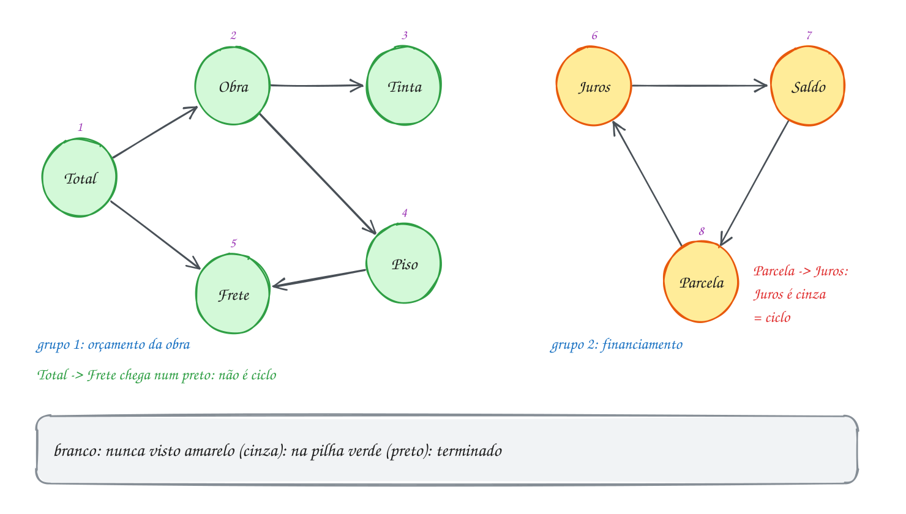
Os grupos ignoram a direção; o ciclo a respeita e usa as cores:
#include <stdbool.h>
#include <stdio.h>
#define V 8
enum { BRANCO, CINZA, PRETO }; // nunca visto, na pilha, terminado
const char *nomes[V] = {"Total", "Obra", "Tinta", "Piso", "Frete", "Juros", "Parcela", "Saldo"};
int usa[V][V]; // usa[a][b] = 1: a fórmula de a usa o valor de b
int grupo[V]; // número do componente de cada célula (0 = sem grupo ainda)
int cor[V], pai[V];
// componentes: a direção não importa, só se as células estão ligadas
void marca_grupo(int u, int g) {
grupo[u] = g;
for (int v = 0; v < V; v++)
if ((usa[u][v] || usa[v][u]) && grupo[v] == 0) marca_grupo(v, g);
}
// ciclo: DFS com três cores; devolve true se achar uma aresta para um CINZA
bool acha_ciclo(int u) {
cor[u] = CINZA;
for (int v = 0; v < V; v++) {
if (!usa[u][v]) continue;
if (cor[v] == CINZA) { // v ainda está na pilha: voltamos a ele
int volta[V], n = 0; // sobe pelos pais de u até v
for (int w = u; w != v; w = pai[w]) volta[n++] = w;
printf("Referência circular: %s", nomes[v]);
for (int i = n - 1; i >= 0; i--) printf(" -> %s", nomes[volta[i]]);
printf(" -> %s\n", nomes[v]);
return true;
}
if (cor[v] == BRANCO) {
pai[v] = u;
if (acha_ciclo(v)) return true;
}
}
cor[u] = PRETO; // tudo abaixo de u já foi explorado
return false;
}
int main(void) {
int formulas[][2] = {{0, 1}, {0, 4}, {1, 2}, {1, 3}, {3, 4}, // orçamento da obra
{5, 7}, {7, 6}, {6, 5}}; // financiamento
for (int k = 0; k < 8; k++) usa[formulas[k][0]][formulas[k][1]] = 1;
int grupos = 0;
for (int u = 0; u < V; u++)
if (grupo[u] == 0) marca_grupo(u, ++grupos); // cada recomeço é um grupo novo
printf("Grupos independentes: %d\n", grupos);
for (int g = 1; g <= grupos; g++) {
printf(" grupo %d:", g);
for (int v = 0; v < V; v++)
if (grupo[v] == g) printf(" %s", nomes[v]);
printf("\n");
}
bool ciclo = false;
for (int u = 0; u < V && !ciclo; u++) {
pai[u] = -1;
if (cor[u] == BRANCO) ciclo = acha_ciclo(u);
}
if (!ciclo) printf("Nenhuma referência circular\n");
return 0;
}
// Saída:
// Grupos independentes: 2
// grupo 1: Total Obra Tinta Piso Frete
// grupo 2: Juros Parcela Saldo
// Referência circular: Juros -> Saldo -> Parcela -> Juros
No fluxograma, cada vizinho de u é cinza (ciclo), branco (desce) ou preto
(ignorado). Sem vizinhos novos, u fica preto:
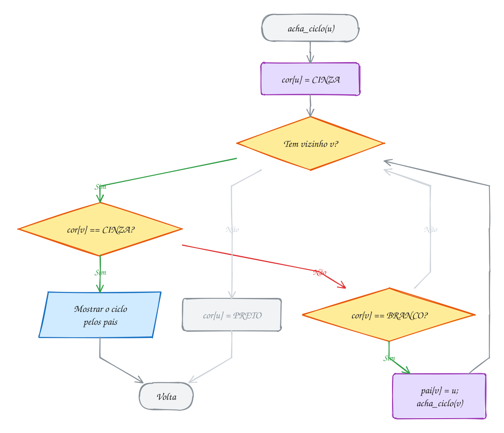
O Frete visto de Total já está preto: sem alarme.
| Evento | Cinza (na pilha) | Preto |
|---|---|---|
| entra em Total, Obra, Tinta | Total, Obra, Tinta | |
| Tinta não usa ninguém | Total, Obra | Tinta |
| entra em Piso, Frete | Total, Obra, Piso, Frete | Tinta |
| Frete, Piso e Obra terminam | Total | Tinta, Frete, Piso, Obra |
| Total olha Frete: preto, segue | Total | (igual) |
| Total termina | os 5 da obra | |
| entra em Juros, Saldo, Parcela | Juros, Saldo, Parcela | os 5 da obra |
| Parcela olha Juros: cinza, ciclo |
O A299 faz o mesmo num grafo não dirigido; o A300 conta grupos com o union-find (0148).
Exemplo A299 · O laço de cabos na rede do escritório
#include <stdbool.h>
#include <stdio.h>
#define V 7
// grafo NÃO dirigido: cabo de rede entre os switches de cada sala
const char *salas[V] = {"TI", "Recepcao", "RH", "Financeiro", "Diretoria", "Deposito", "Copa"};
int cabo[V][V];
bool visitado[V];
int pai[V]; // de onde a DFS chegou em cada sala
bool laco = false;
void explora(int u) {
visitado[u] = true;
for (int v = 0; v < V; v++) {
if (!cabo[u][v] || v == pai[u]) continue; // o cabo por onde cheguei não conta
if (!visitado[v]) {
pai[v] = u;
explora(v);
} else if (!laco) { // vizinho já visto que não é o pai: fecha um laço
laco = true;
printf("Laço de cabos: %s", salas[v]);
for (int w = u; w != v; w = pai[w]) printf(" - %s", salas[w]);
printf(" - %s\n", salas[v]);
}
}
}
int main(void) {
int cabos[][2] = {{0, 1}, {0, 2}, {2, 3}, {3, 4}, {4, 2}, {5, 6}};
for (int k = 0; k < 6; k++) {
cabo[cabos[k][0]][cabos[k][1]] = 1;
cabo[cabos[k][1]][cabos[k][0]] = 1; // mão dupla
}
int redes = 0;
for (int u = 0; u < V; u++) {
if (visitado[u]) continue;
redes++; // cada recomeço é uma rede separada
pai[u] = -1;
explora(u);
}
printf("Redes separadas: %d\n", redes);
printf("%s\n", laco ? "Desligue um cabo do laço" : "Rede sem laços");
return 0;
}
// Saída:
// Laço de cabos: RH - Diretoria - Financeiro - RH
// Redes separadas: 2
// Desligue um cabo do laço
//
// Um laço de cabos entre switches faz os pacotes de broadcast girarem sem
// parar e derruba a rede. Por isso o teste ignora só o PAI: num grafo não
// dirigido, o cabo de volta para quem chamou sempre aparece.
gcc ~/LPEDC/material/A299.c -o ~/LPEDC/material/A299 && ~/LPEDC/material/A299
Exemplo A300 · Grupos de corrida que se juntam
#include <stdio.h>
#define N 8
const char *nomes[N] = {"Ana", "Beto", "Caio", "Dani", "Eli", "Fabi", "Gil", "Hugo"};
int pai[N], tamanho[N];
// union-find (assunto 0148): cada grupo é uma árvore; a raiz é o representante
int acha(int x) {
if (pai[x] != x) pai[x] = acha(pai[x]); // compressão de caminho
return pai[x];
}
int main(void) {
for (int i = 0; i < N; i++) {
pai[i] = i;
tamanho[i] = 1;
}
int grupos = N;
// as amizades chegam pelo aplicativo, uma de cada vez
int amizades[][2] = {{0, 1}, {2, 3}, {1, 3}, {4, 5}, {0, 2}, {6, 7}, {5, 7}, {3, 6}};
for (int k = 0; k < 8; k++) {
int a = amizades[k][0], b = amizades[k][1];
int ra = acha(a), rb = acha(b);
printf("%-4s + %-4s: ", nomes[a], nomes[b]);
if (ra == rb) {
printf("já estavam no mesmo grupo (fecha um ciclo)\n");
continue;
}
if (tamanho[ra] < tamanho[rb]) { // o menor grupo pendura no maior
int t = ra;
ra = rb;
rb = t;
}
pai[rb] = ra;
tamanho[ra] += tamanho[rb];
grupos--;
printf("%d grupo%s (o de %s tem %d)\n", grupos, grupos == 1 ? "" : "s", nomes[ra], tamanho[ra]);
}
return 0;
}
// Saída:
// Ana + Beto: 7 grupos (o de Ana tem 2)
// Caio + Dani: 6 grupos (o de Caio tem 2)
// Beto + Dani: 5 grupos (o de Ana tem 4)
// Eli + Fabi: 4 grupos (o de Eli tem 2)
// Ana + Caio: já estavam no mesmo grupo (fecha um ciclo)
// Gil + Hugo: 3 grupos (o de Gil tem 2)
// Fabi + Hugo: 2 grupos (o de Eli tem 4)
// Dani + Gil : 1 grupo (o de Ana tem 8)
//
// A DFS conta os componentes de um grafo pronto. Quando as arestas chegam
// aos poucos, refazer a DFS a cada amizade custaria O(V + E) cada vez; o
// union-find responde em tempo quase constante.
gcc ~/LPEDC/material/A300.c -o ~/LPEDC/material/A300 && ~/LPEDC/material/A300
Exercício E895 · ★☆☆
Um arquipélago tem sete ilhas: Norte, Sul, Leste, Oeste, Coral, Farol e Gaivota (índices 0 a 6). As pontes, todas de mão dupla, são:
Norte-Farol, Farol-Coral, Sul-Leste, Oeste-Sul
Escreva o programa do zero: monte a matriz de adjacência, descubra os grupos de ilhas ligadas por ponte (os componentes) com uma DFS e um laço externo, mostre cada grupo e quantas pontes novas, no mínimo, ligariam o arquipélago inteiro.
Saída esperada:
Grupos de ilhas: 3
grupo 1: Norte Coral Farol
grupo 2: Sul Leste Oeste
grupo 3: Gaivota
Pontes novas para ligar tudo: 2
Exercício E897 · ★★☆
A prefeitura mapeou as ciclovias entre nove bairros (índices 0 a 8): Centro, Prainha, Jardim, Lagoa, Industrial, Vila Nova, Alto, Porto e Mangue. As ciclovias, de mão dupla, são:
Centro-Prainha, Prainha-Jardim, Jardim-Centro, Lagoa-Alto,
Centro-Porto, Alto-Vila Nova
Escreva o programa do zero. Ele mostra o maior grupo de bairros ligados por ciclovia (quantos e quais), os bairros sem nenhuma ciclovia e quantas ciclovias novas, no mínimo, ligariam a cidade toda.
Saída esperada:
Maior grupo: 4 bairros (Centro, Prainha, Jardim, Porto)
Sem ciclovia: Industrial Mangue
Ciclovias novas para ligar tudo: 3
Exercício E898 · ★★☆
Um parque nacional tem três parques menores, e o mapa de trilhas (mão dupla) liga 11 pontos, numerados de 0 a 10: Portaria, Mirante, Cachoeira, Lago, Bosque, Pico, Gruta, Rio, Ponte, Ninho e Toca. As trilhas são:
0-1 1-2 2-0 | 3-4 4-5 4-6 | 7-8 8-9 9-7 7-10
Escreva o programa do zero: separe os pontos em grupos (os parques) com uma DFS e mostre, para cada parque, seus pontos em ordem de índice, quantos pontos e quantas trilhas ele tem e se existe um circuito (dá para sair de um ponto e voltar a ele sem repetir trilha), sem escrever outra DFS.
Saída esperada:
Parque 1: Portaria Mirante Cachoeira | 3 pontos, 3 trilhas, tem circuito
Parque 2: Lago Bosque Pico Gruta | 4 pontos, 3 trilhas, sem circuito
Parque 3: Rio Ponte Ninho Toca | 4 pontos, 4 trilhas, tem circuito
Exercício E900 · ★★★
O restaurante tem dois turnos, A e B, e oito funcionários: Ana, Bia, Caio, Duda, Enzo, Flor, Gui e Hana (índices 0 a 7). Alguns pares não podem trabalhar juntos (conflito, de mão dupla): 0-1, 1-2, 2-3, 3-0, 4-5, 6-7 e 5-6.
Escreva divide(): ela põe cada pessoa num turno, com todo par em conflito em turnos diferentes, e mostra os dois turnos; se for impossível, mostra o primeiro par que cairia junto. Use uma DFS que pinta: quem começa uma DFS nova vai para o turno A e cada vizinho recebe o turno oposto (vizinhos em ordem de índice). Chame divide() e de novo após acrescentar Ana-Caio.
Saída esperada:
Turno A: Ana Caio Enzo Gui
Turno B: Bia Duda Flor Hana
Impossível: Caio e Ana cairiam no mesmo turno
O mestre de obras tem oito serviços para encaixar no cronograma. Não dá para levantar parede sem fundação, nem pintar com o reboco molhado, nem pôr o piso antes da hidráulica. Ele precisa de uma lista em que todo serviço apareça depois dos que ele espera. A mesma necessidade aparece na ordem das disciplinas de um curso com pré-requisitos e na ordem em que um compilador processa arquivos que dependem uns dos outros.
Cada regra "a vem antes de b" vira uma seta a -> b num grafo dirigido. A
lista que o mestre de obras quer é uma ordenação topológica: uma ordem
dos vértices em que toda seta aponta para a frente, de um vértice para outro
que aparece depois dele (CORMEN et al., 2024, cap. 20). Ela só existe se o
grafo não tem ciclo: se a Parede espera o Reboco e o Reboco espera a Parede,
nenhum dos dois pode vir primeiro. Um grafo dirigido sem ciclos se chama
DAG (directed acyclic graph).
Para montar a lista, o algoritmo mais intuitivo faz o que o mestre de obras faria no papel: começa pelo que não espera ninguém. Para isso, conte, para cada serviço, quantas setas chegam nele. Esse número é o grau de entrada, e diz quantos serviços ele ainda espera. A Fundação tem grau de entrada 0; a Pintura, que espera Piso e Reboco, tem 2.
O algoritmo de Kahn funciona assim. Ponha numa fila (assunto 0085)
todos os serviços com grau de entrada 0, os que podem começar já. Depois,
repita: tire um serviço da fila e escreva-o na lista. Como ele está feito,
cada serviço que esperava por ele passa a esperar um a menos, e o grau
dele diminui (grau[v]--). Quem chegar a 0 ficou livre e entra na fila.
Quando a fila esvaziar, a lista está pronta (KAHN, 1962).
O Kahn detecta ciclo de brinde. Num ciclo, cada vértice espera outro do mesmo ciclo, então nenhum chega a grau 0 e nenhum entra na fila. Se a lista terminar com menos de V vértices, os que sobraram estão num ciclo ou dependem de algum. Cada vértice entra na fila uma vez, e cada seta diminui um grau uma vez: o custo é O(V + E) com lista de adjacência e O(V²) com matriz, porque achar os vizinhos de um vértice custa uma linha inteira (SZWARCFITER; MARKENZON, 2010).
A ordenação topológica não é única. Depois das Paredes, Elétrica, Hidráulica e Telhado ficam livres juntos, e qualquer ordem entre os três respeita as regras. Quem decide é a ordem em que entram na fila, que no programa segue o índice dos vértices.
Há um segundo caminho, pela DFS do assunto 0111. Pense no momento em que
dfs(u) termina: tudo o que u alcança, ou seja, tudo o que depende de
u, já terminou antes. Então a ordem de término, a pós-ordem, lida de
trás para a frente, põe cada vértice antes de tudo o que depende dele. Basta
empilhar u no fim de dfs(u) e, no final, desempilhar tudo. É a versão do
Cormen, que ordena pelo tempo de término decrescente; o exemplo A301 a
mostra em C (CORMEN et al., 2024, cap. 20).
[!WARNING] O grau que importa é o de entrada:
grau[b] += antes[a][b], somando pela coluna. Pela linha dá o de saída e acusa ciclo que não existe. Semfeitas < V, um ciclo gera uma lista incompleta que parece certa.
Oito serviços de uma obra: não dá para levantar parede sem fundação nem pintar com o reboco molhado. O número em cada serviço é a posição dele na lista:
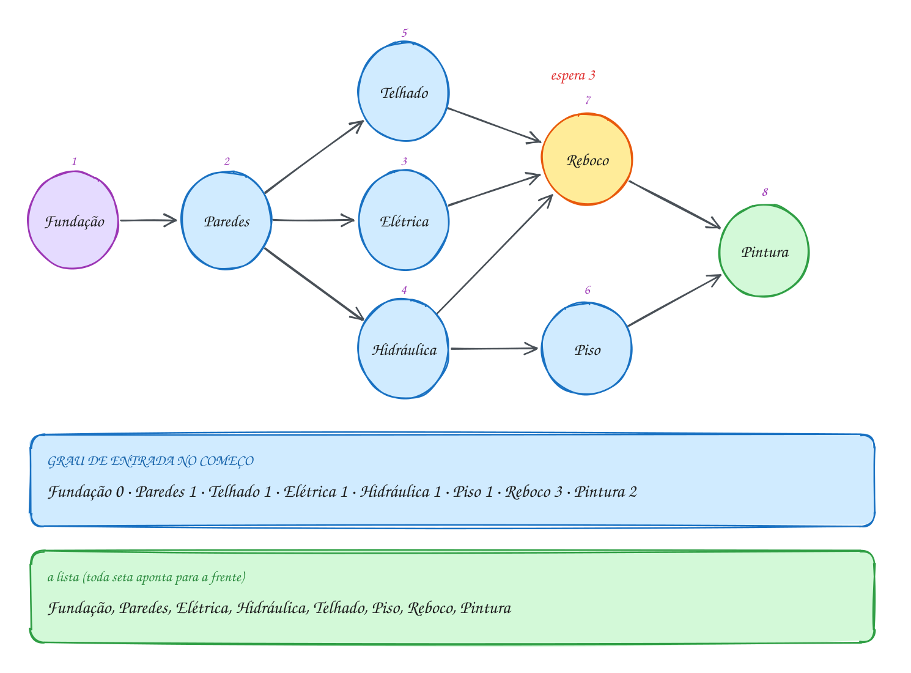
A fila é um vetor: cada vértice entra uma vez, então V posições bastam.
#include <stdio.h>
#define V 8
int main(void) {
const char *tarefas[V] = {"Elétrica", "Fundação", "Hidráulica", "Paredes",
"Piso", "Pintura", "Reboco", "Telhado"};
int antes[V][V] = {0}; // antes[a][b] = 1: a precisa terminar antes de b
int regras[][2] = {{1, 3}, {3, 7}, {3, 0}, {3, 2}, {7, 6},
{0, 6}, {2, 6}, {2, 4}, {6, 5}, {4, 5}};
for (int k = 0; k < 10; k++) antes[regras[k][0]][regras[k][1]] = 1;
int grau[V] = {0}; // quantas tarefas cada uma ainda espera
for (int a = 0; a < V; a++)
for (int b = 0; b < V; b++) grau[b] += antes[a][b];
int fila[V], inicio = 0, fim = 0;
for (int v = 0; v < V; v++)
if (grau[v] == 0) fila[fim++] = v; // quem não espera ninguém começa
int feitas = 0;
while (inicio < fim) {
int u = fila[inicio++];
printf("%d. %s\n", ++feitas, tarefas[u]);
for (int v = 0; v < V; v++) {
if (!antes[u][v]) continue;
grau[v]--; // u terminou: v espera uma a menos
if (grau[v] == 0) fila[fim++] = v; // v ficou livre
}
}
if (feitas < V) printf("Ciclo: %d tarefas nunca ficaram livres\n", V - feitas);
return 0;
}
// Saída:
// 1. Fundação
// 2. Paredes
// 3. Elétrica
// 4. Hidráulica
// 5. Telhado
// 6. Piso
// 7. Reboco
// 8. Pintura
O laço do fluxograma só pergunta "a fila tem alguém?". O ciclo vem no fim: quantos saíram, comparado com V.
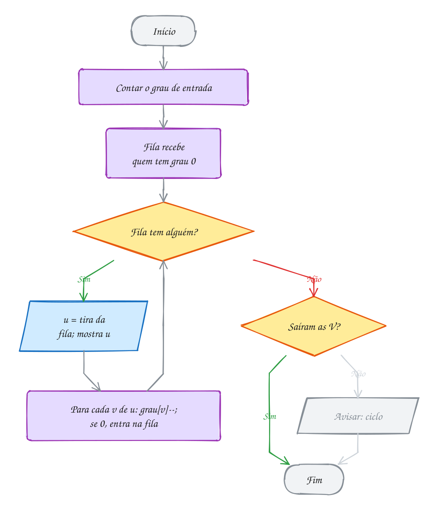
| Sai | Graus que caem | Entram na fila | Fila depois |
|---|---|---|---|
| (início) | Fundação | Fundação | |
| Fundação | Paredes 1 → 0 | Paredes | Paredes |
| Paredes | Elétrica, Hidráulica e Telhado 1 → 0 | os três | Elétrica, Hidráulica, Telhado |
| Elétrica | Reboco 3 → 2 | Hidráulica, Telhado | |
| Hidráulica | Piso 1 → 0, Reboco 2 → 1 | Piso | Telhado, Piso |
| Telhado | Reboco 1 → 0 | Reboco | Piso, Reboco |
| Piso | Pintura 2 → 1 | Reboco | |
| Reboco | Pintura 1 → 0 | Pintura | Pintura |
| Pintura | (vazia) |
O A302 usa o Kahn para contar o mínimo de semestres de um curso.
Exemplo A301 · Ordem de compilação pela DFS
#include <stdbool.h>
#include <stdio.h>
#define V 7
enum { BRANCO, CINZA, PRETO };
const char *modulos[V] = {"main", "menu", "estoque", "banco", "relatorio", "util", "log"};
int usa[V][V]; // usa[a][b] = 1: a.c faz #include "b.h" (b precisa estar pronto antes)
int cor[V];
int pos_ordem[V], n_pos; // a ordem em que as chamadas da DFS terminam
bool dfs(int u) {
cor[u] = CINZA;
for (int v = 0; v < V; v++) {
if (!usa[u][v]) continue;
if (cor[v] == CINZA) {
printf("Include circular: %s -> %s\n", modulos[u], modulos[v]);
return false;
}
if (cor[v] == BRANCO && !dfs(v)) return false;
}
cor[u] = PRETO;
pos_ordem[n_pos++] = u; // u termina depois de tudo de que ele depende
return true;
}
void ordem_de_compilacao(void) {
for (int v = 0; v < V; v++) cor[v] = BRANCO;
n_pos = 0;
for (int u = 0; u < V; u++)
if (cor[u] == BRANCO && !dfs(u)) return;
printf("Compilar:");
for (int i = 0; i < n_pos; i++) printf(" %s", modulos[pos_ordem[i]]);
printf("\n");
}
int main(void) {
int includes[][2] = {{0, 1}, {0, 4}, {1, 2}, {2, 3}, {4, 2},
{4, 5}, {3, 6}, {5, 6}, {2, 5}};
for (int k = 0; k < 9; k++) usa[includes[k][0]][includes[k][1]] = 1;
ordem_de_compilacao();
usa[6][1] = 1; // alguém fez o log incluir o menu
ordem_de_compilacao();
return 0;
}
// Saída:
// Compilar: log banco util estoque menu relatorio main
// Include circular: log -> menu
//
// Aqui as setas apontam para quem precisa vir ANTES (a usa b). Por isso a
// própria pós-ordem já é a resposta. Com setas no sentido "a antes de b",
// como na obra do texto, a resposta é a pós-ordem lida de trás para frente.
gcc ~/LPEDC/material/A301.c -o ~/LPEDC/material/A301 && ~/LPEDC/material/A301
Exemplo A302 · Quantos semestres até o TCC
#include <stdio.h>
#define V 10
int main(void) {
const char *disc[V] = {"Algoritmos", "Cálculo I", "Cálculo II", "Estruturas", "Banco de Dados",
"Redes", "Sist. Operacionais", "Compiladores", "TCC", "Inglês"};
int pre[V][V] = {0}; // pre[a][b] = 1: a é pré-requisito de b
int regras[][2] = {{0, 3}, {0, 4}, {1, 2}, {3, 6}, {3, 7},
{2, 7}, {6, 5}, {4, 8}, {7, 8}, {5, 8}};
for (int k = 0; k < 10; k++) pre[regras[k][0]][regras[k][1]] = 1;
int grau[V] = {0};
for (int a = 0; a < V; a++)
for (int b = 0; b < V; b++) grau[b] += pre[a][b];
// Kahn por rodadas: cada rodada pega TODO mundo que já está liberado
int atual[V], n_atual = 0;
for (int v = 0; v < V; v++)
if (grau[v] == 0) atual[n_atual++] = v;
int semestre = 0, cursadas = 0;
while (n_atual > 0) {
printf("Semestre %d:", ++semestre);
int prox[V], n_prox = 0;
for (int i = 0; i < n_atual; i++) {
int u = atual[i];
printf("%s %s", i > 0 ? "," : "", disc[u]);
cursadas++;
for (int v = 0; v < V; v++)
if (pre[u][v] && --grau[v] == 0) prox[n_prox++] = v; // libera para a próxima rodada
}
printf("\n");
for (int i = 0; i < n_prox; i++) atual[i] = prox[i];
n_atual = n_prox;
}
if (cursadas < V) printf("Grade com pré-requisito circular!\n");
else printf("Mínimo: %d semestres\n", semestre);
return 0;
}
// Saída:
// Semestre 1: Algoritmos, Cálculo I, Inglês
// Semestre 2: Estruturas, Banco de Dados, Cálculo II
// Semestre 3: Sist. Operacionais, Compiladores
// Semestre 4: Redes
// Semestre 5: TCC
// Mínimo: 5 semestres
//
// O número de rodadas é o tamanho do caminho mais longo do DAG, contado em
// vértices: Algoritmos -> Estruturas -> Sist. Operacionais -> Redes -> TCC.
// Nenhuma grade, por mais matérias que você pegue, termina antes disso.
gcc ~/LPEDC/material/A302.c -o ~/LPEDC/material/A302 && ~/LPEDC/material/A302
Exercício E901 · ★☆☆
A receita de bolo tem oito passos (índices 0 a 7): bater os ovos, desenformar, despejar na forma, misturar os secos, juntar tudo, preaquecer o forno, untar a forma e assar. As regras "a antes de b" são:
bater os ovos -> juntar tudo misturar os secos -> juntar tudo
juntar tudo -> despejar na forma untar a forma -> despejar na forma
despejar na forma -> assar preaquecer o forno -> assar
assar -> desenformar
Escreva do zero o algoritmo de Kahn (matriz, grau de entrada, fila) e mostre os passos numerados. Examine os vizinhos em ordem de índice.
Saída esperada:
1. bater os ovos
2. misturar os secos
3. preaquecer o forno
4. untar a forma
5. juntar tudo
6. despejar na forma
7. assar
8. desenformar
Exercício E903 · ★★☆
A equipe de suporte tem sete chamados, #101 a #107 (índices 0 a 6), e alguns só podem ser resolvidos depois de outros:
#105 -> #101 #105 -> #102 #106 -> #102 #102 -> #103
#107 -> #104 #101 -> #104
O Kahn com fila atende na ordem em que os chamados ficam livres. A chefe quer outra regra: entre os livres, sempre o de MENOR número. Escreva kahn_fila() (o Kahn com fila) e kahn_menor() (a cada passo, procura o menor índice ainda não feito com grau de entrada 0). Mostre as duas ordens.
Saída esperada:
Fila: #105 #106 #107 #101 #102 #104 #103
Menor: #105 #101 #106 #102 #103 #107 #104
Exercício E904 · ★★☆
Uma obra tem oito serviços (índices 0 a 7, com a duração em dias): Elétrica 5, Fundação 10, Hidráulica 6, Paredes 15, Piso 4, Pintura 6, Reboco 8 e Telhado 7. As regras "a antes de b" são:
Fundação -> Paredes Paredes -> Telhado Paredes -> Elétrica
Paredes -> Hidráulica Telhado -> Reboco Elétrica -> Reboco
Hidráulica -> Reboco Hidráulica -> Piso Reboco -> Pintura
Piso -> Pintura
Com equipes em paralelo, um serviço começa no dia em que o ÚLTIMO dos que ele espera termina. Escreva o Kahn com fila (vizinhos em ordem de índice) e mostre, na ordem em que os serviços saem da fila, o dia de início e o de fim de cada um, o prazo total e o caminho crítico (a corrente de serviços que, se atrasar um dia, atrasa a obra).
Saída esperada:
Fundação: dia 0 ao 10
Paredes: dia 10 ao 25
Elétrica: dia 25 ao 30
Hidráulica: dia 25 ao 31
Telhado: dia 25 ao 32
Piso: dia 31 ao 35
Reboco: dia 32 ao 40
Pintura: dia 40 ao 46
Obra pronta em 46 dias
Caminho crítico: Fundação -> Paredes -> Telhado -> Reboco -> Pintura
Exercício E906 · ★★★
Quantas ordens diferentes existem para a rotina da manhã? As tarefas são café, banho, vestir, escovar e sair (índices 0 a 4), com as regras:
banho -> vestir café -> escovar vestir -> sair escovar -> sair
Escreva conta(): ela gera TODAS as ordenações topológicas com backtracking (assunto 0127), mostra cada uma quando mostrar é true e devolve quantas são. Depois acrescente uma sexta tarefa, ler as mensagens (antes de sair), e peça só o total.
Saída esperada:
café, banho, vestir, escovar, sair
café, banho, escovar, vestir, sair
café, escovar, banho, vestir, sair
banho, café, vestir, escovar, sair
banho, café, escovar, vestir, sair
banho, vestir, café, escovar, sair
Total com 5 tarefas: 6
Total com 6 tarefas: 30
A prefeitura quer asfaltar estradas entre seis vilas: Sede, Ponte, Brejo, Serra, Lagoa e Vale. A engenharia orçou nove trechos possíveis, de R$ 2 mil a R$ 9 mil cada. Depois da obra, deve dar para ir de qualquer vila a qualquer outra pelo asfalto, e a prefeitura quer gastar o mínimo. Repare no pedido: não é o caminho mais curto entre duas vilas, é um conjunto de estradas que ligue todo mundo com a menor soma.
Esse conjunto nunca tem ciclo. Se três estradas formassem um triângulo, dava para tirar a mais cara delas e as vilas continuariam ligadas pelas outras duas, gastando menos. Um grafo conexo e sem ciclo se chama árvore, e uma árvore com V vértices tem sempre V - 1 arestas: menos que isso deixa alguém de fora, mais que isso fecha um ciclo. As seis vilas ficam ligadas com exatamente cinco estradas.
O problema tem nome. Uma árvore geradora de um grafo é uma árvore que usa arestas do grafo e toca todos os vértices dele. A árvore geradora mínima (MST, de minimum spanning tree) é a de menor soma de pesos, num grafo não dirigido e ponderado, em que cada aresta tem um peso (CORMEN et al., 2024, cap. 21). Redes elétricas, de água e de cabos se planejam assim.
O algoritmo de Kruskal é um guloso (assunto 0133) com uma regra só. Ordene as arestas da mais barata para a mais cara. Percorra a lista e aceite cada aresta que não feche ciclo com as já aceitas; recuse as que fecham. Pare quando tiver V - 1 arestas (KRUSKAL, 1956). Nas vilas, a Serra-Lagoa (2) entra, a Ponte-Brejo (3) entra, e assim por diante, até que a Sede-Ponte (6) aparece quando Sede e Ponte já estão ligadas pelo Brejo, e é recusada.
O passo delicado é saber se uma aresta fecha ciclo. Ela fecha quando as
duas pontas já estão ligadas por arestas aceitas, ou seja, no mesmo grupo.
Grupos que se juntam e nunca se separam são o caso exato do union-find
(assunto 0148). Cada grupo de vilas já ligadas é um conjunto. Para a aresta
a-b, se acha(a) e acha(b) dão o mesmo representante, ela fecharia um
ciclo; se não, ela entra e une junta os dois grupos (SEDGEWICK; WAYNE,
2011).
O custo é dominado pela ordenação das arestas, O(E log E). Como um grafo simples tem E < V², log E < 2 log V, e o custo também se escreve O(E log V). As operações do union-find, com os dois truques do 0148, custam quase O(1) cada (CORMEN et al., 2024, cap. 21).
Por que o guloso acerta? Divida os vértices em dois grupos quaisquer, um corte. Toda árvore que liga tudo precisa de pelo menos uma aresta cruzando de um grupo ao outro. A aresta mais barata que cruza o corte se chama leve, e a propriedade do corte garante que ela é segura: sempre existe uma MST que a contém, então aceitá-la não estraga nada (CORMEN et al., 2024, cap. 21). Quando o Kruskal aceita uma aresta, ela é a mais barata que liga o grupo de uma ponta ao resto, porque todas as mais baratas já foram vistas antes.
Com pesos repetidos, pode haver mais de uma MST. Nas vilas, a Lagoa-Vale também custa 7; se viesse antes da Serra-Vale na lista ordenada, entraria no lugar dela. A árvore muda, mas o custo mínimo, R$ 21 mil, é o mesmo: a MST pode não ser única, o custo mínimo é.
[!WARNING] Testar
pai[a] != pai[b]no lugar deacha(a) != acha(b)é o erro clássico:painão é o representante. E noqsort,x->custo - y->custoestoura perto deINT_MAX; use(x->custo > y->custo) - (x->custo < y->custo).
A prefeitura quer asfaltar estradas entre seis vilas com o menor custo, a partir de nove trechos orçados. Verde entrou, vermelho fecharia ciclo e cinza nem foi olhado, porque as 5 arestas já tinham saído:
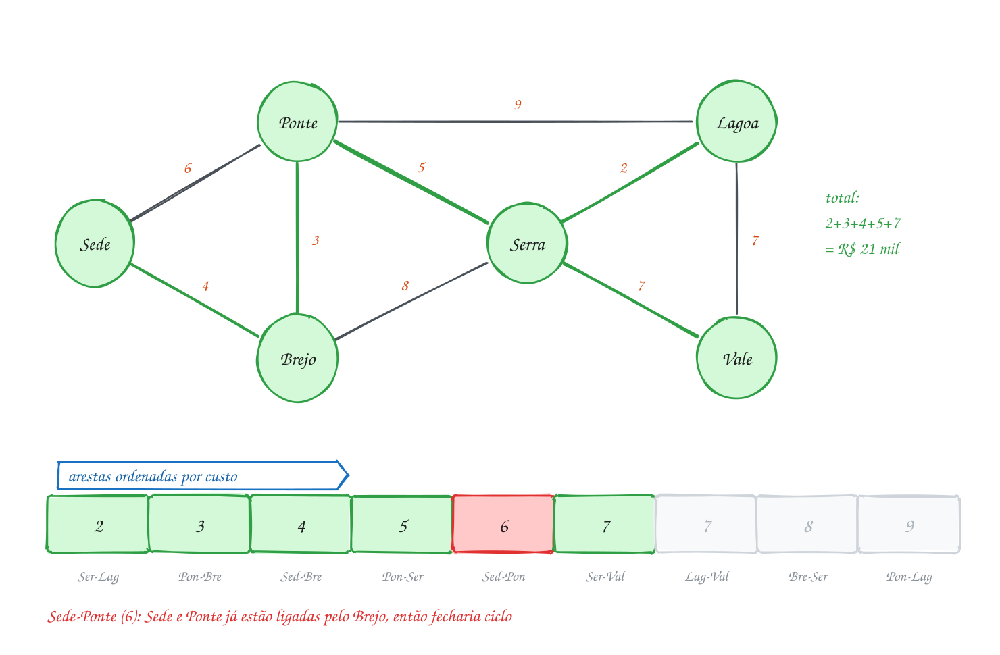
A lista de arestas é ordenada com o qsort (assunto 0096); o union-find usa
compressão de caminho e união por tamanho:
#include <stdio.h>
#include <stdlib.h>
#define V 6
#define E 9
typedef struct {
int a, b, custo; // estrada entre a e b, em R$ mil
} Aresta;
const char *vilas[V] = {"Sede", "Ponte", "Brejo", "Serra", "Lagoa", "Vale"};
int pai[V], tamanho[V];
int acha(int x) { // representante do grupo de x, com compressão de caminho
if (pai[x] != x) pai[x] = acha(pai[x]);
return pai[x];
}
void une(int ra, int rb) { // junta dois grupos: o menor pendura no maior
if (tamanho[ra] < tamanho[rb]) {
int t = ra;
ra = rb;
rb = t;
}
pai[rb] = ra;
tamanho[ra] += tamanho[rb];
}
int compara(const void *p, const void *q) {
const Aresta *x = p, *y = q;
if (x->custo != y->custo) return x->custo - y->custo;
return x->a - y->a; // empate: decide pelo primeiro vértice
}
int main(void) {
Aresta estradas[E] = {{0, 2, 4}, {1, 2, 3}, {0, 1, 6}, {2, 3, 8}, {1, 3, 5},
{1, 4, 9}, {3, 4, 2}, {3, 5, 7}, {4, 5, 7}};
qsort(estradas, E, sizeof(Aresta), compara); // 1) da mais barata à mais cara
for (int v = 0; v < V; v++) { // 2) cada vila começa sozinha
pai[v] = v;
tamanho[v] = 1;
}
int total = 0, aceitas = 0;
for (int k = 0; k < E && aceitas < V - 1; k++) { // 3) uma árvore tem V - 1 arestas
Aresta e = estradas[k];
int ra = acha(e.a), rb = acha(e.b);
printf("%s-%s (%d): ", vilas[e.a], vilas[e.b], e.custo);
if (ra == rb) {
printf("fecha ciclo\n"); // as duas pontas já estão ligadas
continue;
}
une(ra, rb);
total += e.custo;
aceitas++;
printf("aceita\n");
}
printf("Total: R$ %d mil em %d estradas\n", total, aceitas);
return 0;
}
// Saída:
// Serra-Lagoa (2): aceita
// Ponte-Brejo (3): aceita
// Sede-Brejo (4): aceita
// Ponte-Serra (5): aceita
// Sede-Ponte (6): fecha ciclo
// Serra-Vale (7): aceita
// Total: R$ 21 mil em 5 estradas
O laço do fluxograma sai ao acabar a lista ou ao completar V - 1 arestas; o union-find decide cada aresta:
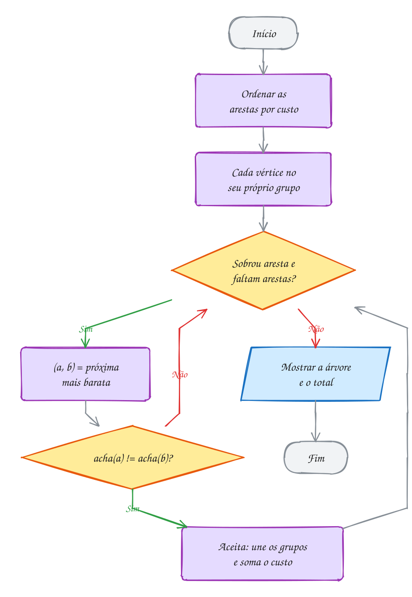
A Sede-Ponte chega quando as duas já estão no mesmo grupo, ligadas pelo Brejo:
| Aresta | acha das pontas |
Decisão | Grupos depois |
|---|---|---|---|
| (início) | {Sede} {Ponte} {Brejo} {Serra} {Lagoa} {Vale} | ||
| Serra-Lagoa 2 | diferentes | aceita | {Serra, Lagoa}, os outros sozinhos |
| Ponte-Brejo 3 | diferentes | aceita | {Ponte, Brejo} {Serra, Lagoa} {Sede} {Vale} |
| Sede-Brejo 4 | diferentes | aceita | {Sede, Ponte, Brejo} {Serra, Lagoa} {Vale} |
| Ponte-Serra 5 | diferentes | aceita | {Sede, Ponte, Brejo, Serra, Lagoa} {Vale} |
| Sede-Ponte 6 | iguais | ciclo | (igual) |
| Serra-Vale 7 | diferentes | aceita | todas juntas: 5 arestas, para |
Lagoa-Vale também custa 7: se viesse antes, entraria no lugar de Serra-Vale, com o mesmo total.
Exemplo A303 · Kruskal parado no meio: três regiões de entrega
#include <stdio.h>
#include <stdlib.h>
#define N 8
#define K 3 // quantas regiões a transportadora quer
typedef struct {
int a, b, dist;
} Aresta;
const char *clientes[N] = {"Ana", "Bruno", "Carla", "Davi", "Edu", "Fê", "Gabi", "Hélio"};
int x[N] = {1, 2, 3, 10, 11, 12, 5, 6}; // posição no mapa, em quadras
int y[N] = {1, 3, 1, 2, 4, 1, 10, 12};
int pai[N];
int acha(int v) {
if (pai[v] != v) pai[v] = acha(pai[v]);
return pai[v];
}
int compara(const void *p, const void *q) {
const Aresta *e = p, *f = q;
return e->dist - f->dist;
}
int main(void) {
Aresta pares[N * (N - 1) / 2]; // grafo completo: todo par de clientes
int m = 0;
for (int i = 0; i < N; i++)
for (int j = i + 1; j < N; j++)
pares[m++] = (Aresta){i, j, abs(x[i] - x[j]) + abs(y[i] - y[j])}; // quadras andando
qsort(pares, m, sizeof(Aresta), compara);
for (int v = 0; v < N; v++) pai[v] = v;
int grupos = N, k = 0;
while (grupos > K) { // Kruskal normal, mas para com K grupos em vez de 1
int ra = acha(pares[k].a), rb = acha(pares[k].b);
if (ra != rb) {
pai[rb] = ra;
grupos--;
}
k++;
}
while (acha(pares[k].a) == acha(pares[k].b)) k++; // a próxima que juntaria duas regiões
int regiao = 0;
for (int v = 0; v < N; v++) {
if (acha(v) != v) continue; // só os representantes abrem uma região
printf("Região %d:", ++regiao);
for (int w = 0; w < N; w++)
if (acha(w) == v) printf(" %s", clientes[w]);
printf("\n");
}
printf("Distância mínima entre regiões: %d quadras (%s e %s)\n", pares[k].dist,
clientes[pares[k].a], clientes[pares[k].b]);
return 0;
}
// Saída:
// Região 1: Ana Bruno Carla
// Região 2: Davi Edu Fê
// Região 3: Gabi Hélio
// Distância mínima entre regiões: 8 quadras (Carla e Davi)
//
// Parar o Kruskal com K grupos dá o agrupamento em que as regiões ficam o
// mais afastadas possível umas das outras: as arestas que faltam são
// justamente as mais longas.
gcc ~/LPEDC/material/A303.c -o ~/LPEDC/material/A303 && ~/LPEDC/material/A303
Exemplo A304 · A árvore de MAIOR soma: o melhor sinal do Wi-Fi mesh
#include <stdio.h>
#include <stdlib.h>
#define V 6
#define E 10
typedef struct {
int a, b, sinal; // qualidade do sinal entre dois roteadores, de 0 a 100
} Link;
const char *pontos[V] = {"Sala", "Cozinha", "Quarto", "Escritório", "Varanda", "Garagem"};
int pai[V];
int acha(int v) {
if (pai[v] != v) pai[v] = acha(pai[v]);
return pai[v];
}
int do_maior(const void *p, const void *q) { // ordem DECRESCENTE
const Link *x = p, *y = q;
return y->sinal - x->sinal;
}
int main(void) {
Link links[E] = {{0, 1, 92}, {0, 2, 70}, {0, 3, 85}, {1, 2, 40}, {1, 4, 66},
{2, 3, 88}, {3, 4, 35}, {4, 5, 58}, {1, 5, 61}, {2, 5, 20}};
qsort(links, E, sizeof(Link), do_maior);
for (int v = 0; v < V; v++) pai[v] = v;
int soma = 0, pior = 100, usados = 0;
for (int k = 0; k < E && usados < V - 1; k++) {
int ra = acha(links[k].a), rb = acha(links[k].b);
if (ra == rb) continue; // já tem caminho melhor entre os dois
pai[rb] = ra;
usados++;
soma += links[k].sinal;
if (links[k].sinal < pior) pior = links[k].sinal;
printf("%s - %s: %d\n", pontos[links[k].a], pontos[links[k].b], links[k].sinal);
}
printf("Soma dos sinais: %d; elo mais fraco: %d\n", soma, pior);
return 0;
}
// Saída:
// Sala - Cozinha: 92
// Quarto - Escritório: 88
// Sala - Escritório: 85
// Cozinha - Varanda: 66
// Cozinha - Garagem: 61
// Soma dos sinais: 392; elo mais fraco: 61
//
// Basta inverter a ordem do qsort. Bônus: o elo mais fraco desta árvore é o
// maior possível. Nenhuma outra árvore que liga a casa toda tem todos os
// links com sinal acima de 61.
gcc ~/LPEDC/material/A304.c -o ~/LPEDC/material/A304 && ~/LPEDC/material/A304
Exercício E907 · ★☆☆
A horta comunitária vai levar água a cinco canteiros com mangueira. Os trechos possíveis já vêm em ordem crescente de metros:
Alface-Couve 2, Tomate-Ervas 3, Alface-Tomate 4, Couve-Tomate 5,
Cenoura-Ervas 6, Couve-Cenoura 8, Alface-Ervas 9
Escreva o Kruskal do zero, sem union-find: guarde em grupo[v] o número do grupo de cada canteiro (começa com grupo[v] = v). Uma aresta entre grupos iguais fecharia ciclo; entre grupos diferentes, aceite e passe todo o grupo de b para o grupo de a.
Saída esperada:
Alface-Couve (2 m)
Tomate-Ervas (3 m)
Alface-Tomate (4 m)
Cenoura-Ervas (6 m)
Mangueira total: 15 m
Exercício E909 · ★★☆
Seis vilas (Sede, Ponte, Brejo, Serra, Lagoa e Vale, índices 0 a 5) podem ser ligadas por estas estradas, com o custo em R$ mil:
Sede-Brejo 4 Ponte-Brejo 3 Sede-Ponte 6 Brejo-Serra 8
Ponte-Serra 5 Ponte-Lagoa 9 Serra-Lagoa 2 Serra-Vale 7
Lagoa-Vale 7
O prefeito prometeu asfaltar a estrada Sede-Ponte, que o Kruskal descartaria. Escreva o Kruskal que monte a árvore mais barata que CONTENHA essa estrada (no empate de custo, vale a ordem da lista) e mostre quanto a promessa custou a mais que a árvore mínima sem a exigência.
Saída esperada:
Sede-Ponte (6) obrigatória
Serra-Lagoa (2)
Ponte-Brejo (3)
Ponte-Serra (5)
Serra-Vale (7)
Total: R$ 23 mil
Custo extra da exigência: R$ 2 mil
Exercício E910 · ★★☆
Oito sítios (índices 0 a 7: Ipê, Buriti, Jatobá, Pequi, Aroeira, Babaçu, Cedro e Juçara) querem dividir o custo de puxar cabo de energia. Os trechos possíveis, em km, são:
Ipê-Jatobá 3 Jatobá-Aroeira 4 Ipê-Aroeira 6 Aroeira-Cedro 2
Jatobá-Cedro 5 Buriti-Pequi 7 Pequi-Babaçu 1 Babaçu-Juçara 3
Buriti-Juçara 4 Pequi-Juçara 2
Um rio sem ponte separa os dois grupos de quatro sítios, então não existe árvore que ligue todos: o resultado é uma FLORESTA, uma árvore mínima por margem. Escreva o Kruskal que funciona nesse caso e mostre cada rede (os sítios em ordem de índice e o total de km dela), listando as redes pela ordem do primeiro sítio de cada uma.
Saída esperada:
Rede 1 (Ipê Jatobá Aroeira Cedro): 9 km
Rede 2 (Buriti Pequi Babaçu Juçara): 7 km
Sem travessia: 2 redes separadas, 6 cabos, 16 km
Exercício E911 · ★★★
O parque de diversões vai ligar seis atrações com os trilhos de um trenzinho, gastando o mínimo. As atrações (índices 0 a 5) são Entrada, Carrossel, Roda, Lago, Castelo e Montanha. Os trilhos possíveis, com o custo em R$ mil, na ordem em que foram levantados:
Entrada-Carrossel 4 Roda-Lago 5 Carrossel-Lago 6
Entrada-Roda 7 Lago-Castelo 8 Castelo-Montanha 9
Roda-Montanha 10 Carrossel-Castelo 11 Entrada-Montanha 12
Escreva o Kruskal: ordene as arestas por custo com qsort, use union-find (vetor pai[] e função acha com compressão de caminho) e ligue as RAÍZES dos dois grupos a cada aresta aceita. Pare quando houver V - 1 trilhos e mostre cada um, na ordem em que entra, e o total.
Saída esperada:
Entrada-Carrossel (4)
Roda-Lago (5)
Carrossel-Lago (6)
Lago-Castelo (8)
Castelo-Montanha (9)
Total: R$ 32 mil
Cinco chácaras vão dividir a água de um poço artesiano. O encanador mediu os trechos por onde dá para passar cano: do Poço à chácara da Ana são 4 m, da Ana ao Beto 3 m, do Poço ao Beto 6 m, e assim por diante. O objetivo é o mesmo do Kruskal (0152): ligar todo mundo com o mínimo de cano. O que muda é o jeito de trabalhar.
O encanador não sai comprando o cano mais barato da lista inteira. Ele começa no Poço e vai esticando a rede: a cada passo, olha os canos que ligam uma casa que já tem água a uma que ainda não tem, e instala o mais curto. A casa nova passa a ter água, e o passo se repete. Esse é o algoritmo de Prim: parte de um vértice e, a cada passo, escolhe a aresta mais leve entre um vértice da árvore e um de fora (PRIM, 1957).
A diferença para o Kruskal está na forma da solução enquanto ela se monta. O Kruskal junta pedaços espalhados, uma floresta de grupos que vão se fundindo. O Prim mantém uma árvore só, que cresce a partir da origem e nunca se separa. No fim, os dois chegam a uma árvore geradora mínima.
O Prim também é guloso, e acerta pelo mesmo motivo do Kruskal, a propriedade do corte (0152). Em cada passo, o corte separa as casas com água das casas sem água. O cano mais curto que cruza esse corte é uma aresta leve, e uma aresta leve sempre cabe numa árvore mínima (CORMEN et al., 2024, cap. 21).
O trabalho de cada passo é achar o cano mais curto que sai da rede. Para
não procurar na lista toda, o Prim guarda os candidatos num heap de
mínimo (assunto 0102), que entrega o menor na hora. Cada item do heap diz
"dá para ligar v com chave metros a partir de de". Quando uma casa
entra na rede, os canos que saem dela para casas de fora entram no heap.
Um item pode envelhecer. O Beto entra no heap com 6 m, pelo Poço, e depois com 3 m, pela Ana. Quando o de 3 m sai, o Beto entra na rede, e o item de 6 m continua no heap, inútil. Na versão preguiçosa, ninguém atualiza nada dentro do heap: quando um item sai e a casa dele já está na rede, ele é simplesmente descartado (SEDGEWICK; WAYNE, 2011).
A versão do Cormen, MST-PRIM, faz diferente. Ela põe todos os vértices no
heap desde o começo, com chave infinita, e, quando acha um cano mais curto
para um vértice, baixa a chave dele no lugar, com a operação
DECREASE-KEY. Não sobram itens velhos. Com heap binário, as duas versões
custam O(E log V) (CORMEN et al., 2024, cap. 21).
Se o código lembrou o Dijkstra (0112), não é por acaso: é o mesmo laço, e só muda a chave com que um vizinho entra no heap. No Prim, a chave é o cano que liga o vizinho à rede. No Dijkstra, é a distância acumulada desde a origem. Por isso as árvores saem diferentes: no exemplo, o Prim gasta 18 m de cano e a árvore do Dijkstra, 21 m. A tabela resume:
chave de w ao sair de v |
o que a árvore minimiza | |
|---|---|---|
| Prim | cano[v][w] |
a soma de todos os canos |
| Dijkstra | dist[v] + cano[v][w] |
a distância de cada casa até o Poço |
[!WARNING] Sem
if (na_rede[it.v]) continue;, o total soma cano que ninguém instala (aqui, 49 m). Sem!na_rede[w], o heap enche de itens inúteis eCAPpode estourar. Prim e Kruskal só valem para grafo não dirigido.
Cinco chácaras vão dividir a água de um poço com o mínimo de cano. Os números são a ordem de entrada na rede, as arestas verdes são os canos escolhidos, e à direita está o heap logo depois que a Ana entra:
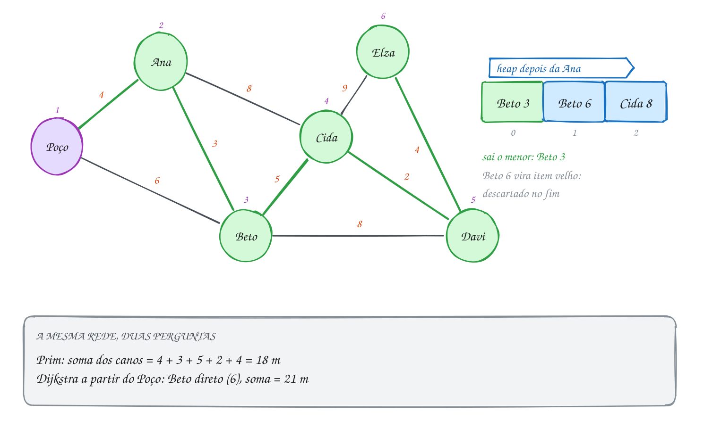
O heap guarda structs e compara pela chave, com sobe e desce do
assunto 0102 em sinais trocados:
#include <stdbool.h>
#include <stdio.h>
#define V 6
#define CAP 32 // cada aresta entra no heap no máximo duas vezes
typedef struct {
int chave, v, de; // "dá para ligar v à rede com chave metros, a partir de de"
} Item;
Item heap[CAP];
int n = 0;
void troca(int i, int j) {
Item t = heap[i];
heap[i] = heap[j];
heap[j] = t;
}
void insere(Item x) { // heap de MÍNIMO: sobe enquanto for menor que o pai
int i = n++;
heap[i] = x;
while (i > 0 && heap[(i - 1) / 2].chave > heap[i].chave) {
troca(i, (i - 1) / 2);
i = (i - 1) / 2;
}
}
Item tira(void) { // tira o menor e desce o último pelo menor filho
Item menor = heap[0];
heap[0] = heap[--n];
int i = 0;
while (2 * i + 1 < n) {
int f = 2 * i + 1;
if (f + 1 < n && heap[f + 1].chave < heap[f].chave) f++;
if (heap[i].chave <= heap[f].chave) break;
troca(i, f);
i = f;
}
return menor;
}
int main(void) {
const char *nomes[V] = {"Poço", "Ana", "Beto", "Cida", "Davi", "Elza"};
int cano[V][V] = {0}; // metros; 0 = sem caminho para cano
int trechos[][3] = {{0, 1, 4}, {0, 2, 6}, {1, 2, 3}, {1, 3, 8}, {2, 3, 5},
{2, 4, 8}, {3, 4, 2}, {3, 5, 9}, {4, 5, 4}};
for (int k = 0; k < 9; k++) {
cano[trechos[k][0]][trechos[k][1]] = trechos[k][2];
cano[trechos[k][1]][trechos[k][0]] = trechos[k][2];
}
bool na_rede[V] = {false};
int total = 0;
insere((Item){0, 0, -1}); // começa pelo Poço, de graça
while (n > 0) {
Item it = tira();
if (na_rede[it.v]) { // já entrou por um cano mais curto
printf(" descarta %s (%d)\n", nomes[it.v], it.chave);
continue;
}
na_rede[it.v] = true;
total += it.chave;
if (it.de >= 0) printf("%s <- %s (%d m)\n", nomes[it.v], nomes[it.de], it.chave);
for (int w = 0; w < V; w++) // candidatos novos: canos que saem de v
if (cano[it.v][w] && !na_rede[w]) insere((Item){cano[it.v][w], w, it.v});
}
printf("Total: %d m de cano\n", total);
return 0;
}
// Saída:
// Ana <- Poço (4 m)
// Beto <- Ana (3 m)
// Cida <- Beto (5 m)
// Davi <- Cida (2 m)
// Elza <- Davi (4 m)
// descarta Beto (6)
// descarta Cida (8)
// descarta Davi (8)
// descarta Elza (9)
// Total: 18 m de cano
O fluxograma é o laço do Dijkstra com heap. "Já está na rede?" descarta os itens velhos:
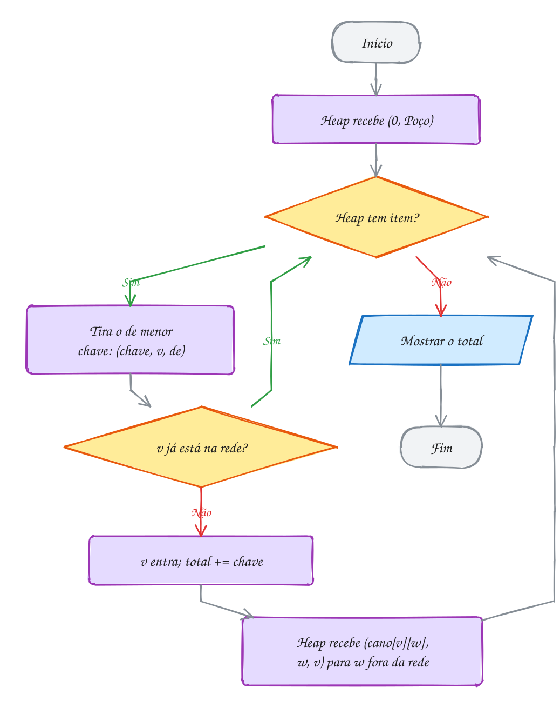
| Entra | Itens que entram no heap | Heap depois (do menor) |
|---|---|---|
| Poço (0) | Ana 4, Beto 6 | Ana 4, Beto 6 |
| Ana (4) | Beto 3, Cida 8 | Beto 3, Beto 6, Cida 8 |
| Beto (3) | Cida 5, Davi 8 | Cida 5, Beto 6, Cida 8, Davi 8 |
| Cida (5) | Davi 2, Elza 9 | Davi 2, Beto 6, Cida 8, Davi 8, Elza 9 |
| Davi (2) | Elza 4 | Elza 4, Beto 6, Cida 8, Davi 8, Elza 9 |
| Elza (4) | sobram 4 itens velhos, todos descartados |
O Dijkstra a partir do Poço ligaria o Beto direto ao Poço (6 m, contra 7 pela Ana) e gastaria 21 m; o Prim gasta 18 m. Outra pergunta, outra árvore.
Exemplo A305 · Prim sem heap: fiação dos postes de um loteamento
#include <math.h>
#include <stdbool.h>
#include <stdio.h>
#define N 7
int main(void) {
// posição de cada poste, em metros; qualquer poste pode ligar em qualquer outro
double x[N] = {0, 30, 62, 10, 45, 82, 25};
double y[N] = {0, 10, 0, 40, 35, 28, 70};
double chave[N]; // o fio mais curto conhecido que liga o poste à rede
int pai[N];
bool na_rede[N] = {false};
for (int v = 0; v < N; v++) {
chave[v] = INFINITY; // da math.h: maior que qualquer double
pai[v] = -1;
}
chave[0] = 0; // o transformador fica no poste 0
double total = 0;
for (int passo = 0; passo < N; passo++) {
int u = -1;
for (int v = 0; v < N; v++) // O(V): procura a menor chave num vetor
if (!na_rede[v] && (u == -1 || chave[v] < chave[u])) u = v;
na_rede[u] = true;
total += chave[u];
if (pai[u] != -1) printf("poste %d - poste %d: %.1f m\n", pai[u], u, chave[u]);
for (int v = 0; v < N; v++) {
if (na_rede[v]) continue;
double d = hypot(x[u] - x[v], y[u] - y[v]); // distância em linha reta
if (d < chave[v]) {
chave[v] = d; // Prim: só o fio, sem somar o caminho até o transformador
pai[v] = u;
}
}
}
printf("Fio total: %.1f m\n", total);
return 0;
}
// Saída:
// poste 0 - poste 1: 31.6 m
// poste 1 - poste 4: 29.2 m
// poste 1 - poste 2: 33.5 m
// poste 2 - poste 5: 34.4 m
// poste 4 - poste 3: 35.4 m
// poste 3 - poste 6: 33.5 m
// Fio total: 197.6 m
//
// Num grafo completo, E é quase V²/2. O heap custaria O(E log V); o vetor,
// O(V²). Aqui o Prim sem heap é o mais rápido, e nem precisa guardar as
// arestas: a distância é calculada na hora.
gcc ~/LPEDC/material/A305.c -o ~/LPEDC/material/A305 -lm && ~/LPEDC/material/A305
Exemplo A306 · Prim e Dijkstra: a mesma função, uma linha diferente
#include <limits.h>
#include <stdbool.h>
#include <stdio.h>
#define V 5
#define INFINITO INT_MAX
const char *salas[V] = {"Servidor", "Recepção", "Vendas", "Estoque", "Diretoria"};
int cabo[V][V]; // metros de cabo entre duas salas; 0 = sem passagem
// dijkstra = false: Prim (árvore de menor soma de cabo)
// dijkstra = true: Dijkstra (cada sala o mais perto possível do servidor)
void arvore(bool dijkstra) {
int chave[V], pai[V];
bool pronto[V] = {false};
for (int v = 0; v < V; v++) {
chave[v] = INFINITO;
pai[v] = -1;
}
chave[0] = 0;
for (int passo = 0; passo < V; passo++) {
int u = -1;
for (int v = 0; v < V; v++)
if (!pronto[v] && chave[v] != INFINITO && (u == -1 || chave[v] < chave[u])) u = v;
if (u == -1) break;
pronto[u] = true;
for (int v = 0; v < V; v++) {
if (!cabo[u][v] || pronto[v]) continue;
int nova = dijkstra ? chave[u] + cabo[u][v] : cabo[u][v]; // A linha que muda
if (nova < chave[v]) {
chave[v] = nova;
pai[v] = u;
}
}
}
int soma = 0;
printf("%s:", dijkstra ? "Dijkstra" : "Prim");
for (int v = 1; v < V; v++) {
printf(" %s-%s", salas[pai[v]], salas[v]);
soma += cabo[pai[v]][v];
}
printf("\n cabo instalado: %d m\n", soma);
printf(" distância de cada sala ao servidor pela árvore:");
for (int v = 1; v < V; v++) {
int d = 0;
for (int w = v; pai[w] != -1; w = pai[w]) d += cabo[pai[w]][w];
printf(" %d", d);
}
printf("\n");
}
int main(void) {
int trechos[][3] = {{0, 1, 10}, {0, 2, 14}, {0, 3, 20}, {1, 2, 5},
{2, 3, 7}, {3, 4, 6}, {1, 4, 25}, {0, 4, 24}};
for (int k = 0; k < 8; k++) {
cabo[trechos[k][0]][trechos[k][1]] = trechos[k][2];
cabo[trechos[k][1]][trechos[k][0]] = trechos[k][2];
}
arvore(false);
arvore(true);
return 0;
}
// Saída:
// Prim: Servidor-Recepção Recepção-Vendas Vendas-Estoque Estoque-Diretoria
// cabo instalado: 28 m
// distância de cada sala ao servidor pela árvore: 10 15 22 28
// Dijkstra: Servidor-Recepção Servidor-Vendas Servidor-Estoque Servidor-Diretoria
// cabo instalado: 68 m
// distância de cada sala ao servidor pela árvore: 10 14 20 24
//
// O Prim gasta 40 m a menos de cabo; o Dijkstra deixa cada sala com o
// caminho mais curto até o servidor (a Diretoria fica a 24 m, contra 28).
// Qual é "melhor" depende da pergunta: custo da obra ou atraso do sinal.
gcc ~/LPEDC/material/A306.c -o ~/LPEDC/material/A306 && ~/LPEDC/material/A306
Exercício E913 · ★☆☆
Na orla, um gerador vai alimentar quatro quiosques: Coco, Pastel, Açaí e Milho. A matriz tem os metros de cabo de cada trecho possível (0 quer dizer "não dá para passar cabo"):
Gerador Coco Pastel Açaí Milho
Gerador 0 12 20 25 0
Coco 12 0 9 0 30
Pastel 20 9 0 6 15
Açaí 25 0 6 0 11
Milho 0 30 15 11 0
Escreva o Prim sem heap, em O(V²), a partir do Gerador: vetores chave[], pai[] e na_rede[]; a cada passo, entra o vértice fora da rede com a menor chave. Mostre cada cabo na ordem em que entra e o total.
Saída esperada:
Gerador - Coco: 12 m
Coco - Pastel: 9 m
Pastel - Açaí: 6 m
Açaí - Milho: 11 m
Total: 38 m
Exercício E915 · ★★☆
Seis estações de bicicleta (índices 0 a 5: Rodoviária, Praça, Museu, Orla, Feira e Estádio) podem ser ligadas por ciclovias de mão dupla, com a distância em km:
Rodoviária-Praça 5 Rodoviária-Feira 3 Praça-Museu 4 Praça-Feira 6
Museu-Orla 2 Feira-Orla 7 Orla-Estádio 8 Museu-Estádio 9
Feira-Estádio 10
Começar o Prim por outra estação muda alguma coisa? Escreva prim(origem), na versão sem heap (O(V²)), que mostra a origem, a ordem em que as estações entram na rede e o total, e chame-a para cada uma das seis origens.
Saída esperada:
Rodoviária: Rodoviária Feira Praça Museu Orla Estádio | 22
Praça: Praça Museu Orla Rodoviária Feira Estádio | 22
Museu: Museu Orla Praça Rodoviária Feira Estádio | 22
Orla: Orla Museu Praça Rodoviária Feira Estádio | 22
Feira: Feira Rodoviária Praça Museu Orla Estádio | 22
Estádio: Estádio Orla Museu Praça Rodoviária Feira | 22
Exercício E916 · ★★☆
A operadora de internet vai levar fibra da Central a sete pontos do bairro. Os pontos (índices 0 a 7) são Central, Padaria, Escola, Igreja, Farmácia, Praça, Posto e Clínica. Os trechos possíveis, em km:
Central-Padaria 2 Central-Escola 4 Padaria-Escola 3 Padaria-Igreja 5
Escola-Farmácia 2 Igreja-Praça 1 Farmácia-Praça 6 Escola-Posto 7
Farmácia-Clínica 3 Posto-Clínica 2 Central-Posto 9
Escreva o Prim a partir da Central, guardando o pai de cada ponto em pai[]. Depois escreva a função recursiva mostra(v, nivel), que imprime a árvore como um organograma: cada ponto com 2 espaços de recuo por nível e, entre parênteses, os km da fibra que o liga ao pai. Os filhos de um ponto aparecem em ordem de índice, logo abaixo dele. Termine com o total.
Saída esperada:
Central
Padaria (2)
Escola (3)
Farmácia (2)
Clínica (3)
Posto (2)
Igreja (5)
Praça (1)
Total: 18 km
Exercício E917 · ★★★
Quatro casas de um sítio precisam de água. Cada casa pode cavar o próprio poço (Ana R$ 8 mil, Beto 5, Cida 9, Davi 7) ou receber cano de uma casa vizinha que já tem água. Os canos possíveis (R$ mil):
Ana-Beto 2, Beto-Cida 3, Cida-Davi 9, Ana-Davi 10, Ana-Cida 10
Qual a solução mais barata? Crie um vértice imaginário, a "Água" (índice 0), ligado a cada casa por uma aresta com o custo do poço dela: cavar um poço vira "ligar a casa na Água", e o problema vira uma árvore geradora mínima comum. Escreva o programa com Prim a partir da Água e mostre a decisão de cada casa, na ordem em que entram.
Saída esperada:
Beto: cava poço (R$ 5 mil)
Ana: cano de Beto (R$ 2 mil)
Cida: cano de Beto (R$ 3 mil)
Davi: cava poço (R$ 7 mil)
Total: R$ 17 mil (2 poços)
O motoboy sai da Base e quer chegar em Casa gastando o mínimo. Alguns trechos coincidem com uma corrida que paga mais do que a gasolina custa. Do Shopping ao Centro, por exemplo, ele gasta R$ 2 e recebe R$ 6 de uma entrega: o custo líquido desse trecho é R$ -4. O mapa vira um grafo dirigido com pesos negativos, e um algoritmo que você conhece passa a errar.
O Dijkstra (assunto 0112) fixa a cada passo o vértice mais perto da origem e nunca mais mexe nele. Isso só é seguro se somar pesos nunca diminui um custo, porque aí nenhum caminho que passa por um vértice mais distante pode voltar mais barato (CORMEN et al., 2024, cap. 22). Com peso negativo, essa premissa cai. No mapa do motoboy, o Dijkstra fixa o Centro com R$ 4, direto da Base, antes de olhar o Shopping. Mas Base, Shopping, Centro custa 6 - 4 = R$ 2. O erro se propaga, e ele diz que Casa custa R$ 12, quando custa R$ 10.
Para consertar, é preciso uma operação que você já usou sem nome. Relaxar
a aresta u -> v de custo c é perguntar: chegar a v passando por u é
melhor do que o que eu já sei? Se dist[u] + c < dist[v], sim, e você
atualiza dist[v] com o valor novo e anota em anterior[v] que o melhor
caminho chega por u. No Cormen, esse teste se chama RELAX, e os dois
vetores são os atributos v.d e v.π (CORMEN et al., 2024, cap. 22).
O algoritmo de Bellman-Ford não fixa ninguém cedo. Ele começa com
dist[origem] = 0 e INFINITO para todos os outros. Depois faz V - 1
rodadas, e em cada rodada relaxa todas as arestas do grafo, uma por
uma, sem escolher a menor nem seguir ordem especial (BELLMAN, 1958). Um
valor errado pode aparecer numa rodada e ser corrigido na seguinte; no
mapa, a Casa aparece com 12 na rodada 3 e cai para 10 na rodada 4.
Por que V - 1 rodadas bastam? Um caminho mínimo nunca repete vértice, então tem no máximo V vértices e V - 1 arestas. Depois da primeira rodada, a primeira aresta desse caminho já foi relaxada na ordem certa; depois da segunda, a segunda; e assim por diante. Na rodada V - 1, o caminho inteiro está acertado. Se uma rodada passa sem mudar nada, as seguintes também não mudariam, e dá para parar antes.
Há um caso sem resposta. Um ciclo negativo é um circuito cuja soma de pesos é menor que zero. Se ele é alcançável da origem, dar uma volta nele diminui o custo, dar duas diminui mais, e o caminho mínimo deixa de existir (CORMEN et al., 2024, cap. 22). O Bellman-Ford detecta isso com uma rodada extra. Depois das V - 1 rodadas, todos os caminhos mínimos já estariam certos; se alguma aresta ainda melhora, é porque há um ciclo negativo no caminho.
O preço da robustez é o tempo. São V - 1 rodadas, cada uma olhando as E arestas: O(V · E), contra O((V + E) log V) do Dijkstra com heap. A regra prática: com peso negativo, Bellman-Ford; sem ele, Dijkstra. Há um caso especial mais barato. Num DAG (0151), basta relaxar cada aresta uma vez, na ordem topológica, porque quando um vértice é processado tudo o que chega nele já foi. Isso dá os caminhos mínimos em O(V + E), mesmo com pesos negativos (CORMEN et al., 2024, cap. 22).
[!WARNING] O teste
dist[u] != INFINITOé obrigatório:INT_MAX + (-4)não estoura, e um vértice inalcançável "melhora" outro com distância falsa. Em grafo não dirigido, uma aresta negativa já é um ciclo negativo (ir e voltar).
Um motoboy vai da Base para Casa, e alguns trechos pagam mais que a gasolina:
do Shopping ao Centro o custo líquido é R$ -4. O Dijkstra diria R$ 12 até
Casa; o certo é R$ 10. As setas mostram o custo, cada lugar a dist final, e
embaixo o vetor dist a cada rodada:
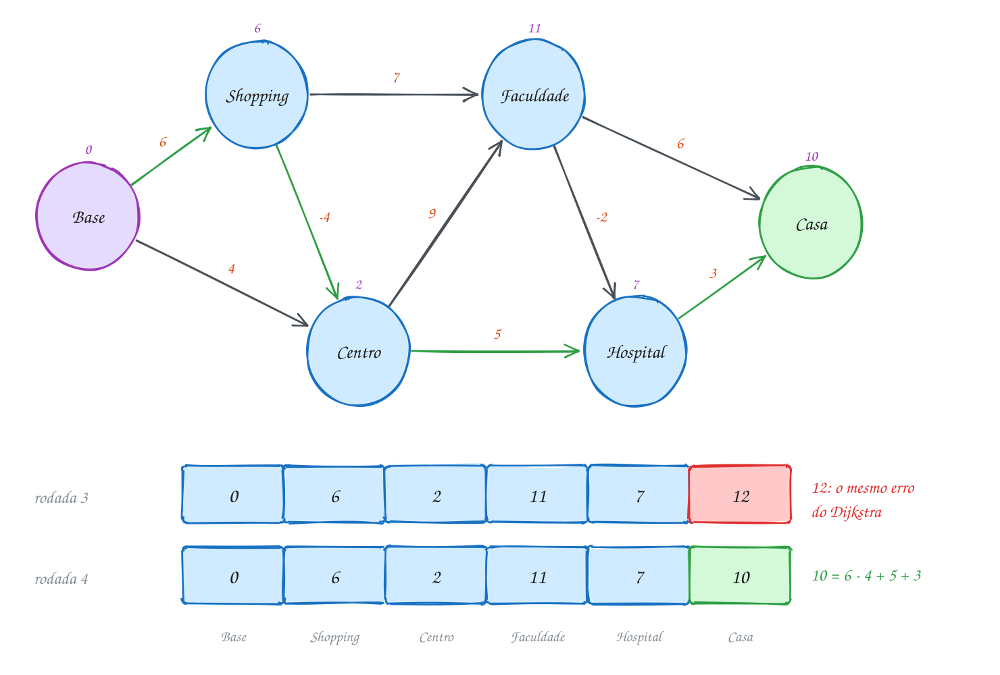
A lista de arestas começa de propósito pelas que chegam em Casa, para as rodadas aparecerem.
#include <stdbool.h>
#include <stdio.h>
#define V 6
#define E 9
#define INFINITO 1000000000 // folgado: INFINITO + peso ainda cabe num int
typedef struct {
int de, para, custo; // custo líquido em R$: gasolina menos o que a corrida paga
} Trecho;
const char *lugares[V] = {"Base", "Shopping", "Centro", "Faculdade", "Hospital", "Casa"};
int main(void) {
Trecho t[E] = {{4, 5, 3}, {3, 5, 6}, {3, 4, -2}, {2, 3, 9}, {2, 4, 5},
{1, 3, 7}, {1, 2, -4}, {0, 2, 4}, {0, 1, 6}};
int dist[V], anterior[V];
for (int v = 0; v < V; v++) {
dist[v] = INFINITO;
anterior[v] = -1;
}
dist[0] = 0;
for (int rodada = 1; rodada <= V - 1; rodada++) { // no máximo V - 1 rodadas
bool mudou = false;
for (int k = 0; k < E; k++) { // relaxa TODAS as arestas, em qualquer ordem
int u = t[k].de, v = t[k].para;
if (dist[u] != INFINITO && dist[u] + t[k].custo < dist[v]) {
dist[v] = dist[u] + t[k].custo;
anterior[v] = u;
mudou = true;
}
}
printf("rodada %d:", rodada);
for (int v = 0; v < V; v++) {
if (dist[v] == INFINITO) printf(" ∞");
else printf(" %d", dist[v]);
}
printf("\n");
if (!mudou) break; // nada mudou: as próximas rodadas também não mudariam
}
for (int k = 0; k < E; k++) // rodada extra: se ainda melhora, há ciclo negativo
if (dist[t[k].de] != INFINITO && dist[t[k].de] + t[k].custo < dist[t[k].para]) {
printf("Ciclo negativo: dá para lucrar sem fim\n");
return 0;
}
int rota[V], n = 0;
for (int v = 5; v != -1; v = anterior[v]) rota[n++] = v;
printf("Até Casa (R$ %d):", dist[5]);
for (int i = n - 1; i >= 0; i--) printf(" %s%s", lugares[rota[i]], i > 0 ? " ->" : "");
printf("\n");
return 0;
}
// Saída:
// rodada 1: 0 6 4 ∞ ∞ ∞
// rodada 2: 0 6 2 13 9 ∞
// rodada 3: 0 6 2 11 7 12
// rodada 4: 0 6 2 11 7 10
// rodada 5: 0 6 2 11 7 10
// Até Casa (R$ 10): Base -> Shopping -> Centro -> Hospital -> Casa
O fluxograma não escolhe o menor: rodadas por fora, arestas por dentro, com saída sem mudança ou após V - 1 rodadas. Depois vem a rodada extra:
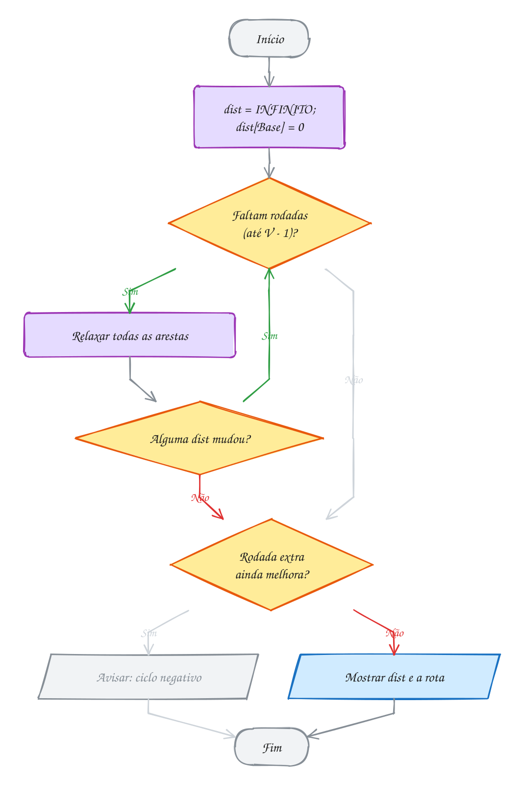
A Casa aparece com 12 na rodada 3 (o valor errado do Dijkstra) e cai para 10 na rodada 4, quando a melhora do Centro chega até ela:
| Rodada | O que muda | Base | Shopping | Centro | Faculdade | Hospital | Casa |
|---|---|---|---|---|---|---|---|
| início | 0 | ∞ | ∞ | ∞ | ∞ | ∞ | |
| 1 | só as arestas que saem da Base | 0 | 6 | 4 | ∞ | ∞ | ∞ |
| 2 | Centro cai para 6 - 4 = 2 | 0 | 6 | 2 | 13 | 9 | ∞ |
| 3 | o 2 do Centro chega em Faculdade e Hospital | 0 | 6 | 2 | 11 | 7 | 12 |
| 4 | Casa via Hospital: 7 + 3 | 0 | 6 | 2 | 11 | 7 | 10 |
| 5 | nada muda: para | 0 | 6 | 2 | 11 | 7 | 10 |
Com as arestas da Base primeiro na lista, uma rodada já bastaria (A308).
Exemplo A307 · Ciclo negativo no câmbio: dinheiro que se multiplica
#include <math.h>
#include <stdio.h>
#define V 4
#define E 10
typedef struct {
int de, para;
double taxa; // 1 unidade de "de" vira taxa unidades de "para"
} Troca;
const char *moedas[V] = {"Real", "Dólar", "Euro", "Peso"};
int main(void) {
Troca t[E] = {{0, 1, 0.20}, {1, 0, 4.95}, {1, 2, 0.92}, {2, 1, 1.07}, {2, 0, 5.45},
{0, 2, 0.18}, {0, 3, 180}, {3, 0, 0.0054}, {1, 3, 880}, {3, 1, 0.0011}};
// multiplicar taxas vira somar logaritmos; "ganhar" (produto > 1) vira soma < 0
double dist[V];
int anterior[V];
for (int v = 0; v < V; v++) {
dist[v] = INFINITY;
anterior[v] = -1;
}
dist[0] = 0;
for (int rodada = 1; rodada <= V - 1; rodada++)
for (int k = 0; k < E; k++) {
double peso = -log(t[k].taxa);
if (dist[t[k].de] + peso < dist[t[k].para]) {
dist[t[k].para] = dist[t[k].de] + peso;
anterior[t[k].para] = t[k].de;
}
}
int x = -1; // rodada extra: alguém ainda melhora?
for (int k = 0; k < E && x == -1; k++)
if (dist[t[k].de] - log(t[k].taxa) < dist[t[k].para] - 1e-12) x = t[k].para;
if (x == -1) {
printf("Sem arbitragem: nenhuma volta dá lucro\n");
return 0;
}
for (int i = 0; i < V; i++) x = anterior[x]; // V passos para trás: com certeza dentro do ciclo
int ciclo[V + 1], n = 0, v = x;
do { // anda pelos anteriores até voltar a x
ciclo[n++] = v;
v = anterior[v];
} while (v != x);
double produto = 1;
printf("Ciclo: %s", moedas[x]);
for (int i = n - 1; i >= 0; i--) { // os anteriores vêm de trás para frente
int de = ciclo[(i + 1) % n], para = ciclo[i];
for (int k = 0; k < E; k++)
if (t[k].de == de && t[k].para == para) produto *= t[k].taxa;
printf(" -> %s", moedas[para]);
}
printf("\nR$ 1000.00 viram R$ %.2f numa volta\n", 1000 * produto);
return 0;
}
// Saída:
// Ciclo: Real -> Dólar -> Euro -> Real
// R$ 1000.00 viram R$ 1002.80 numa volta
//
// Um ciclo negativo, aqui, é dinheiro infinito: cada volta multiplica o
// valor por 1,0028. Na vida real, a cotação se ajusta em segundos, e as
// taxas de cada troca comem o lucro.
gcc ~/LPEDC/material/A307.c -o ~/LPEDC/material/A307 -lm && ~/LPEDC/material/A307
Exemplo A308 · A ordem da lista muda o número de rodadas
#include <stdbool.h>
#include <stdio.h>
#define V 6
#define E 7
#define INFINITO 1000000000
typedef struct {
int de, para, custo;
} Aresta;
// roda o Bellman-Ford e conta rodadas e relaxamentos (vezes que uma dist caiu)
void bellman_ford(const Aresta a[], const char *nome) {
int dist[V];
for (int v = 0; v < V; v++) dist[v] = INFINITO;
dist[0] = 0;
int rodadas = 0, relaxou = 0;
bool mudou = true;
while (mudou && rodadas < V - 1) {
mudou = false;
rodadas++;
for (int k = 0; k < E; k++)
if (dist[a[k].de] != INFINITO && dist[a[k].de] + a[k].custo < dist[a[k].para]) {
dist[a[k].para] = dist[a[k].de] + a[k].custo;
relaxou++;
mudou = true;
}
}
printf("%s: %d rodadas, %d relaxamentos, dist final:", nome, rodadas, relaxou);
for (int v = 0; v < V; v++) printf(" %d", dist[v]);
printf("\n");
}
int main(void) {
// paradas 0 a 5 de uma linha de ônibus; o -2 é o desconto da integração
Aresta na_ordem[E] = {{0, 1, 4}, {0, 2, 9}, {1, 2, 3}, {2, 3, -2},
{3, 4, 5}, {1, 4, 12}, {4, 5, 1}};
Aresta invertida[E];
for (int k = 0; k < E; k++) invertida[k] = na_ordem[E - 1 - k];
bellman_ford(na_ordem, "na ordem do caminho");
bellman_ford(invertida, "ordem invertida ");
return 0;
}
// Saída:
// na ordem do caminho: 2 rodadas, 6 relaxamentos, dist final: 0 4 7 5 10 11
// ordem invertida : 5 rodadas, 11 relaxamentos, dist final: 0 4 7 5 10 11
//
// A resposta é a mesma; o trabalho, não. Na ordem do caminho, cada aresta
// já encontra a dist de origem pronta, e a 2ª rodada só confirma. Invertida,
// cada rodada avança uma aresta do caminho, e a parada 5 só fica certa na
// 5ª rodada, a última permitida. O limite de V - 1 rodadas é o pior caso, e
// ele acontece.
gcc ~/LPEDC/material/A308.c -o ~/LPEDC/material/A308 && ~/LPEDC/material/A308
Exercício E919 · ★☆☆
Viagem de carro da Garagem até o Sítio. Cada trecho tem um custo em R$ (gasolina e pedágio), mas o aplicativo do Posto A dá cashback para quem abastece lá e segue para o Posto B: esse trecho custa R$ -10. Os trechos são de mão única (lugares de 0 a 4: Garagem, Posto A, Posto B, Pedágio, Sítio):
Garagem -> Posto A 30 Garagem -> Posto B 45 Posto A -> Posto B -10
Posto A -> Pedágio 25 Posto B -> Pedágio 12 Pedágio -> Sítio 8
Posto B -> Sítio 40
Escreva o Bellman-Ford do zero, com os trechos numa lista de arestas, e mostre o menor custo da Garagem até cada lugar.
Saída esperada:
Garagem: R$ 0
Posto A: R$ 30
Posto B: R$ 20
Pedágio: R$ 32
Sítio: R$ 40
Exercício E921 · ★★☆
Um drone de entregas sai da Base. Cada voo gasta uma porcentagem da bateria; o voo da Torre até a Praia é uma descida planando com o painel solar ligado e RECARREGA 5% (gasto -5). Os pontos (índices 0 a 6) são Base, Ponte, Torre, Praia, Farol, Ilha e Mata. Os voos, de mão única, são:
Base -> Ponte 10 Base -> Torre 25 Ponte -> Torre 8 Torre -> Praia -5
Ponte -> Praia 20 Praia -> Farol 7 Farol -> Ilha 12 Torre -> Ilha 30
Mata -> Farol 3 Ilha -> Praia 4
Escreva o Bellman-Ford com o vetor anterior[] e mostre, para cada ponto, o gasto mínimo e a rota completa, ou "inalcançável" se nenhum voo chega lá (é o caso da Mata, que só tem voo de saída).
Saída esperada:
Ponte (10%): Base -> Ponte
Torre (18%): Base -> Ponte -> Torre
Praia (13%): Base -> Ponte -> Torre -> Praia
Farol (20%): Base -> Ponte -> Torre -> Praia -> Farol
Ilha (32%): Base -> Ponte -> Torre -> Praia -> Farol -> Ilha
Mata: inalcançável
Exercício E922 · ★★☆
Num jogo, passar por um portal custa créditos, mas o portal da Caverna para a Floresta DEVOLVE 4 créditos (custo -4). As salas (índices 0 a 4) são Início, Floresta, Caverna, Castelo e Saída, e os portais, de mão única:
Início -> Floresta 2 Início -> Caverna 5 Caverna -> Floresta -4
Floresta -> Castelo 6 Castelo -> Saída 1 Caverna -> Castelo 9
Guarde os custos numa matriz custo[][] (0 = sem portal) e escreva dijkstra (o do assunto 0112, O(V²), que nunca reabre um vértice já fixo) e bellman_ford, ambos a partir do Início. Compare as duas respostas para cada sala e marque as que o Dijkstra erra.
Saída esperada:
Floresta: Dijkstra 2, Bellman-Ford 1 (Dijkstra errou)
Caverna: Dijkstra 5, Bellman-Ford 5
Castelo: Dijkstra 8, Bellman-Ford 7 (Dijkstra errou)
Saída: Dijkstra 9, Bellman-Ford 8 (Dijkstra errou)
Exercício E924 · ★★★
Você quer voar de Recife a Curitiba, mas odeia conexões. As cidades (índices 0 a 4) são Recife, Salvador, Brasília, São Paulo e Curitiba. Os voos (mão única, preço em R$):
Recife -> Curitiba 900 Recife -> Salvador 200
Salvador -> Brasília 250 Brasília -> Curitiba 300
Recife -> Brasília 500 Salvador -> São Paulo 350
São Paulo -> Curitiba 150 Brasília -> São Paulo 120
Escreva mais_barato(origem, destino, k): o menor preço usando NO MÁXIMO k voos. Use o Bellman-Ford com k rodadas, mas em cada rodada relaxe lendo uma CÓPIA da dist da rodada anterior: assim a rodada r acrescenta no máximo um voo a cada caminho. Mostre o resultado para k de 1 a 3.
Saída esperada:
Até 1 trecho: R$ 900
Até 2 trechos: R$ 800
Até 3 trechos: R$ 700
Um aplicativo de corrida precisa do tempo de viagem de cada bairro para cada outro, para estimar o preço antes de chamar o motorista. A cidade tem cinco bairros ligados por ruas de mão única: Centro, Porto, Vila, Alto e Feira. A pergunta não é mais "da origem para todo mundo", como no Dijkstra (0112). É "de todo mundo para todo mundo".
Esse é o problema dos caminhos mínimos entre todos os pares: achar a
menor distância de cada vértice a cada outro e guardar tudo numa matriz
d, em que d[i][j] é a distância de i até j (CORMEN et al., 2024, cap.
23). Dá para rodar o Dijkstra uma vez a partir de cada bairro. O
algoritmo de Floyd-Warshall faz diferente: monta a matriz inteira com
três laços aninhados e quase nenhum código (FLOYD, 1962).
A ideia vem da programação dinâmica (módulo 21), e o truque está em qual
subproblema escolher. Em vez de pensar em caminhos inteiros, pense nos
bairros que um caminho tem permissão de usar como passagem, isto é, por
onde ele pode passar no meio, sem ser origem nem destino. No começo, nenhum
bairro pode ser passagem, e d[i][j] é só o tempo da rua direta de i para
j: INFINITO se a rua não existe e 0 na diagonal, porque ir de um bairro a
ele mesmo não custa nada (FLOYD, 1962).
Agora libere o Centro como passagem. Para cada par i, j, pergunte: ir
de i ao Centro e do Centro a j sai mais barato que o melhor que eu
conhecia? Se sim, atualize. Depois libere o Porto, fazendo a mesma pergunta
com o Porto no meio, e depois a Vila, o Alto e a Feira. Cada bairro liberado
é uma rodada:
para cada k: (o bairro que passa a valer como passagem)
para cada i, j:
d[i][j] = mínimo(d[i][j], d[i][k] + d[k][j])
O que garante que isso funciona é a afirmação que vale depois de cada
rodada: terminada a rodada k, d[i][j] é o melhor tempo de i a j que
usa como passagem só os bairros de 0 a k. Na rodada seguinte, o melhor
caminho com o bairro k + 1 liberado ou não passa por ele, e já está em
d[i][j], ou passa uma vez, e é a soma do trecho até ele com o trecho a
partir dele, dois valores já prontos. Por isso o k tem de ser o laço
de fora: ele é a rodada, e os laços de i e j só fazem sentido com a
rodada anterior completa.
Veja a casa d[Centro][Alto] evoluir. Não há rua direta, então ela começa
em INFINITO. Com o Porto liberado, vira 10 (Centro, Porto, Alto). Com a Vila,
cai para 9, porque Centro, Vila, Porto custa menos que Centro, Porto. Com a
Feira, cai para 8. Cada rodada aproveita o que as anteriores já acharam.
O custo é fácil de contar: três laços de V voltas, O(V³) de tempo, e a matriz de V × V, O(V²) de memória. São 125 passos para 5 bairros e 64 milhões para 400. Para grafos grandes e esparsos, como um mapa com 100 mil esquinas e poucas ruas por esquina, o Dijkstra com heap a partir de cada origem sai muito mais barato (CORMEN et al., 2024, cap. 23).
O Floyd-Warshall aceita pesos negativos, desde que não haja ciclo negativo.
Se houver, ele avisa sozinho: no fim, algum d[i][i] fica menor que zero,
porque sair de i e voltar a i pelo ciclo "custa" menos que ficar
parado.
A mesma estrutura de três laços responde outra pergunta. Troque os números
por verdadeiro ou falso, o + por && e o mínimo por ||. Agora
d[i][j] diz se existe caminho de i a j. Essa matriz é o fecho
transitivo do grafo, e essa versão é o algoritmo de Warshall (TENENBAUM;
LANGSAM; AUGENSTEIN, 1995, cap. 8).
[!WARNING] Pôr o
kno laço de dentro compila, roda e erra sem aviso:d[i][k]ed[k][j]ainda não estão prontos. Ed[i][k] + d[k][j]precisa do teste de INFINITO: comINT_MAX, estoura.
Um aplicativo de corrida quer o tempo de cada bairro a cada outro, com ruas de mão única. As setas são as ruas em minutos, e o melhor caminho de Centro até Alto, em verde, passa por três bairros. Embaixo, a tabela final:
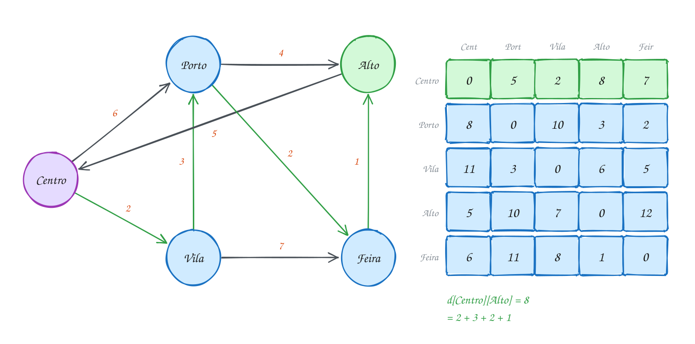
#include <stdio.h>
#define V 5
#define INFINITO 1000000000
int main(void) {
const char *bairros[V] = {"Centro", "Porto", "Vila", "Alto", "Feira"};
int d[V][V];
for (int i = 0; i < V; i++)
for (int j = 0; j < V; j++) d[i][j] = (i == j) ? 0 : INFINITO; // sem rua: infinito
int ruas[][3] = {{0, 2, 2}, {2, 1, 3}, {0, 1, 6}, {1, 3, 4},
{3, 0, 5}, {2, 4, 7}, {4, 3, 1}, {1, 4, 2}};
for (int r = 0; r < 8; r++) d[ruas[r][0]][ruas[r][1]] = ruas[r][2]; // mão única
for (int k = 0; k < V; k++) // k: o bairro que pode servir de passagem
for (int i = 0; i < V; i++) // de i
for (int j = 0; j < V; j++) // para j
if (d[i][k] != INFINITO && d[k][j] != INFINITO && d[i][k] + d[k][j] < d[i][j])
d[i][j] = d[i][k] + d[k][j]; // passar por k é mais rápido
printf("%-8s", "de\\para");
for (int j = 0; j < V; j++) printf("%7s", bairros[j]);
printf("\n");
for (int i = 0; i < V; i++) {
printf("%-8s", bairros[i]);
for (int j = 0; j < V; j++) printf("%7d", d[i][j]);
printf("\n");
}
return 0;
}
// Saída:
// de\para Centro Porto Vila Alto Feira
// Centro 0 5 2 8 7
// Porto 8 0 10 3 2
// Vila 11 3 0 6 5
// Alto 5 10 7 0 12
// Feira 6 11 8 1 0
O fluxograma tem três contadores e uma comparação no miolo, repetida V³ vezes:
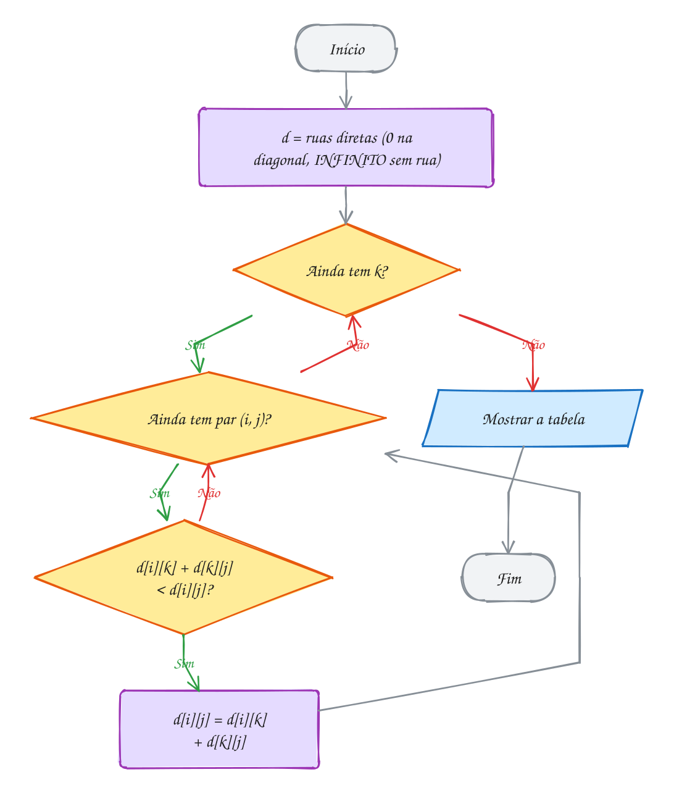
A casa d[Centro][Alto], rodada a rodada:
| Rodada (passagem liberada) | d[Centro][Alto] |
Caminho por trás do número |
|---|---|---|
| início | ∞ | (nenhuma rua direta) |
| k = Centro | ∞ | ninguém chega ao Alto pelo Centro ainda |
| k = Porto | 10 | Centro → Porto → Alto: 6 + 4 |
| k = Vila | 9 | Centro → Vila → Porto → Alto: 2 + 3 + 4 |
| k = Alto | 9 | passar pelo próprio destino não ajuda |
| k = Feira | 8 | Centro → Vila → Porto → Feira → Alto: 2 + 3 + 2 + 1 |
Cada rodada aproveita as anteriores: na da Vila, d[Vila][Alto] já vale 7,
calculado na rodada do Porto.
Exemplo A309 · Floyd-Warshall com rota: o mapa do metrô
#include <stdio.h>
#define V 6
#define INFINITO 1000000000
const char *estacoes[V] = {"Sé", "Luz", "Brás", "Paraíso", "Consolação", "Pinheiros"};
int d[V][V]; // minutos
int prox[V][V]; // prox[i][j]: a primeira estação depois de i no melhor caminho até j
void rota(int i, int j) {
printf("%s", estacoes[i]);
while (i != j) {
i = prox[i][j]; // anda um passo
printf(" -> %s", estacoes[i]);
}
}
int main(void) {
for (int i = 0; i < V; i++)
for (int j = 0; j < V; j++) {
d[i][j] = (i == j) ? 0 : INFINITO;
prox[i][j] = (i == j) ? i : -1;
}
int trilhos[][3] = {{0, 1, 3}, {0, 2, 4}, {0, 3, 5}, {3, 4, 4}, {4, 5, 6}, {1, 4, 9}, {3, 5, 12}};
for (int t = 0; t < 7; t++) {
int a = trilhos[t][0], b = trilhos[t][1];
d[a][b] = d[b][a] = trilhos[t][2]; // o metrô anda nos dois sentidos
prox[a][b] = b;
prox[b][a] = a;
}
for (int k = 0; k < V; k++)
for (int i = 0; i < V; i++)
for (int j = 0; j < V; j++)
if (d[i][k] != INFINITO && d[k][j] != INFINITO && d[i][k] + d[k][j] < d[i][j]) {
d[i][j] = d[i][k] + d[k][j];
prox[i][j] = prox[i][k]; // para ir a j por k, o primeiro passo é o de ir a k
}
int pedidos[][2] = {{2, 5}, {1, 5}, {5, 1}};
for (int p = 0; p < 3; p++) {
int i = pedidos[p][0], j = pedidos[p][1];
printf("%d min: ", d[i][j]);
rota(i, j);
printf("\n");
}
return 0;
}
// Saída:
// 19 min: Brás -> Sé -> Paraíso -> Consolação -> Pinheiros
// 15 min: Luz -> Consolação -> Pinheiros
// 15 min: Pinheiros -> Consolação -> Luz
//
// Uma matriz de V × V próximos passos guarda TODAS as rotas: em vez de
// guardar V² caminhos inteiros, cada casa guarda só um número.
gcc ~/LPEDC/material/A309.c -o ~/LPEDC/material/A309 && ~/LPEDC/material/A309
Exemplo A310 · Fecho transitivo: de qual terminal dá para chegar em qual
#include <stdbool.h>
#include <stdio.h>
#define V 5
int main(void) {
const char *terminais[V] = {"Norte", "Sul", "Leste", "Oeste", "Centro"};
bool chega[V][V] = {{false}}; // linhas de ônibus de mão única
int linhas[][2] = {{0, 4}, {4, 1}, {1, 4}, {2, 0}, {3, 3}};
for (int k = 0; k < 5; k++) chega[linhas[k][0]][linhas[k][1]] = true;
// Warshall: o Floyd-Warshall com || no lugar de min e && no lugar de +
for (int k = 0; k < V; k++)
for (int i = 0; i < V; i++)
for (int j = 0; j < V; j++)
chega[i][j] = chega[i][j] || (chega[i][k] && chega[k][j]);
printf("%-8s", "de\\para");
for (int j = 0; j < V; j++) printf(j < V - 1 ? "%-7s" : "%s\n", terminais[j]);
for (int i = 0; i < V; i++) {
int quantos = 0;
printf("%-8s", terminais[i]);
for (int j = 0; j < V; j++) {
printf("%-7s", chega[i][j] ? "sim" : ".");
quantos += chega[i][j] && i != j;
}
printf("(%d)\n", quantos);
}
return 0;
}
// Saída:
// de\para Norte Sul Leste Oeste Centro
// Norte . sim . . sim (2)
// Sul . sim . . sim (1)
// Leste sim sim . . sim (3)
// Oeste . . . sim . (0)
// Centro . sim . . sim (1)
//
// Repare na diagonal: Sul chega no próprio Sul (vai ao Centro e volta),
// Oeste tem uma linha circular que volta para ele, e Leste não volta nunca.
// O número entre parênteses conta os OUTROS terminais alcançáveis.
gcc ~/LPEDC/material/A310.c -o ~/LPEDC/material/A310 && ~/LPEDC/material/A310
Exercício E925 · ★☆☆
Uma cooperativa tem quatro galpões: Milho, Leite, Frutas e Mel (índices 0 a 3). As estradas internas são de mão única, em km:
Milho -> Leite 8 Leite -> Frutas 3 Frutas -> Milho 4
Milho -> Mel 15 Frutas -> Mel 5 Mel -> Leite 2
Escreva o Floyd-Warshall do zero e mostre a tabela de distâncias, uma linha por galpão de origem (nome com %-7s e cada número com %4d).
Saída esperada:
Milho 0 8 11 15
Leite 7 0 3 8
Frutas 4 7 0 5
Mel 9 2 5 0
Exercício E927 · ★★☆
A prefeitura vai construir um posto de saúde num dos seis bairros (índices 0 a 5: Vila Rica, Jardim, Centro, Lagoa, Bosque e Porto). O morador que fica mais longe do posto deve ficar o mais perto possível. As ruas são de mão dupla (km):
Vila Rica-Jardim 4, Jardim-Centro 3, Centro-Lagoa 5, Lagoa-Bosque 2,
Centro-Bosque 6, Bosque-Porto 7, Jardim-Lagoa 9, Vila Rica-Porto 20
Rode o Floyd-Warshall e, para cada bairro, mostre qual bairro fica mais longe dele e a que distância (o primeiro com a maior, em ordem de índice). No fim, mostre o bairro em que essa pior distância é a menor.
Saída esperada:
Vila Rica: o mais longe é Porto, a 20 km
Jardim: o mais longe é Porto, a 16 km
Centro: o mais longe é Porto, a 13 km
Lagoa: o mais longe é Vila Rica, a 12 km
Bosque: o mais longe é Vila Rica, a 13 km
Porto: o mais longe é Vila Rica, a 20 km
Melhor bairro para o posto: Lagoa (ninguém fica a mais de 12 km)
Exercício E928 · ★★☆
Uma casa de câmbio cobra uma taxa fixa (em centavos) por conversão entre Real, Dólar, Euro e Cripto (índices 0 a 3). As conversões de uma semana, de mão única, são:
Real -> Dólar 30 Dólar -> Euro 20 Euro -> Real 25
Real -> Cripto 50 Cripto -> Dólar -10 Dólar -> Real 35
Euro -> Cripto 15
Na semana 2 de promoção, Cripto -> Dólar dá um bônus maior (-40 em vez de -10). Escreva analisa(semana, ...), que roda o Floyd-Warshall e, olhando a diagonal, diz se existe um ciclo negativo (trocar em roda e sair ganhando) e por quais moedas ele passa. Analise as duas semanas.
Saída esperada:
Semana 1: sem ciclo negativo
Semana 2: ciclo negativo passando por Dólar Euro Cripto
Exercício E930 · ★★★
Cinco bairros (índices 0 a 4: Centro, Porto, Vila, Alto e Feira) têm estas ruas de mão única, em minutos:
Centro -> Vila 2 Vila -> Porto 3 Centro -> Porto 6 Porto -> Alto 4
Alto -> Centro 5 Vila -> Feira 7 Feira -> Alto 1 Porto -> Feira 2
Calcule a tabela com o Floyd-Warshall. Depois a prefeitura abre a rua Feira -> Vila, de 1 minuto. Refazer o Floyd custa O(V³): escreva nova_rua(d, a, b, w), que atualiza a tabela em O(V²). Qualquer caminho que melhora com a rua nova passa por ela uma vez só: "de i até a", mais w, mais "de b até j". Confira o resultado contra um Floyd completo refeito do zero, mostrando a tabela (nome com %-7s e cada número com %4d).
Saída esperada:
Centro 0 5 2 8 7
Porto 8 0 3 3 2
Vila 11 3 0 6 5
Alto 5 10 7 0 12
Feira 6 4 1 1 0
Confere com o Floyd completo: sim
O calouro tem duas dúvidas. A primeira é de calendário: com os pré-requisitos do curso, em quantos semestres ele se forma, e o que cursa em cada um? A segunda é de geografia: qual o caminho mais rápido a pé entre os prédios do campus? As duas viram grafos, mas grafos diferentes, e cada uma pede um algoritmo diferente do módulo.
Essa é a habilidade que o projeto treina: olhar para um problema e reconhecer qual técnica ele pede. A escolha depende de duas coisas. Uma é o tipo do grafo: dirigido ou não, com peso nas arestas ou sem. A outra é a pergunta: ligar, ordenar, achar ciclo, achar caminho de uma origem ou entre todos os pares (ZIVIANI, 2010, cap. 7). A tabela no fim desta seção reúne o módulo nesse formato.
A grade de disciplinas é um grafo dirigido: cada seta a -> b diz "a
vem antes de b". Não há peso, porque um pré-requisito não custa mais que
outro. E não pode haver ciclo, ou nenhuma das disciplinas do ciclo poderia
ser cursada. É um DAG, e a pergunta "em que ordem cursar" é a ordenação
topológica do assunto 0151 (CORMEN et al., 2024, cap. 20).
"Quantos semestres" pede uma variação: o Kahn por rodadas, do exemplo A302. Em vez de tirar um vértice por vez da fila, cada rodada tira todos os que estão livres naquele momento, porque o calouro cursa em paralelo tudo o que já foi liberado. Cada rodada é um semestre. Se sobrarem disciplinas que nunca ficam livres, há um pré-requisito circular, e o programa avisa em vez de inventar uma grade.
O campus é outro tipo de grafo: não dirigido, porque a trilha entre dois prédios se anda nos dois sentidos, e ponderado, com o tempo a pé em minutos. A pergunta é de caminho mínimo, e o calouro vai perguntar várias rotas diferentes ao longo do semestre. Nesse caso, compensa pagar uma vez o Floyd-Warshall (0155), que calcula a tabela de todos os pares, e depois só consultar a matriz (CORMEN et al., 2024, cap. 23).
A matriz de distâncias diz quantos minutos, mas não por onde ir. Para
reconstruir a rota, o programa guarda uma segunda matriz, a do próximo
passo: prox[i][j] é o primeiro prédio depois de i no melhor caminho
até j. Toda vez que o Floyd-Warshall melhora d[i][j] passando por k, o
próximo passo de i para j passa a ser o mesmo de i para k. Para
imprimir a rota, basta seguir prox a partir da origem até chegar ao
destino, como no exemplo A309.
Um único tipo Grafo serve aos dois mapas: o número de vértices, os nomes e
a matriz de pesos. Na grade, o peso 1 só marca que a seta existe; no campus,
o peso é o tempo em minutos. A struct inteira passa de 300 bytes, então as
funções a recebem como const Grafo *: o ponteiro evita copiar tudo a cada
chamada, e o const promete que a função só lê.
| Pergunta | Algoritmo | Custo |
|---|---|---|
| Quais pedaços são independentes? | componentes (DFS + laço externo) | O(V + E) |
| Tem ciclo num grafo dirigido? | DFS com três cores | O(V + E) |
| Em que ordem fazer, respeitando as setas? | ordenação topológica (Kahn ou DFS) | O(V + E) |
| Ligar todos pelo menor custo total | Kruskal ou Prim (árvore geradora mínima) | O(E log E) ou O(E log V) |
| Menor caminho de uma origem, pesos >= 0 | Dijkstra (assunto 0112) | O((V + E) log V) |
| Menor caminho de uma origem, com pesos negativos | Bellman-Ford | O(V · E) |
| Menor caminho entre todos os pares | Floyd-Warshall | O(V³) |
[!WARNING] Na matriz com "0 = sem aresta", uma aresta de peso zero some. Não misture as perguntas: Floyd-Warshall com 100 mil vértices é inviável (10¹⁵ passos), e a árvore mínima não dá caminho mínimo (21 m contra 18 m no 0153).
O calouro quer saber em quantos semestres se forma e qual o caminho mais rápido entre os prédios do campus. O desenho mostra a grade, com o semestre de cada disciplina, e o campus, com as duas rotas em verde:
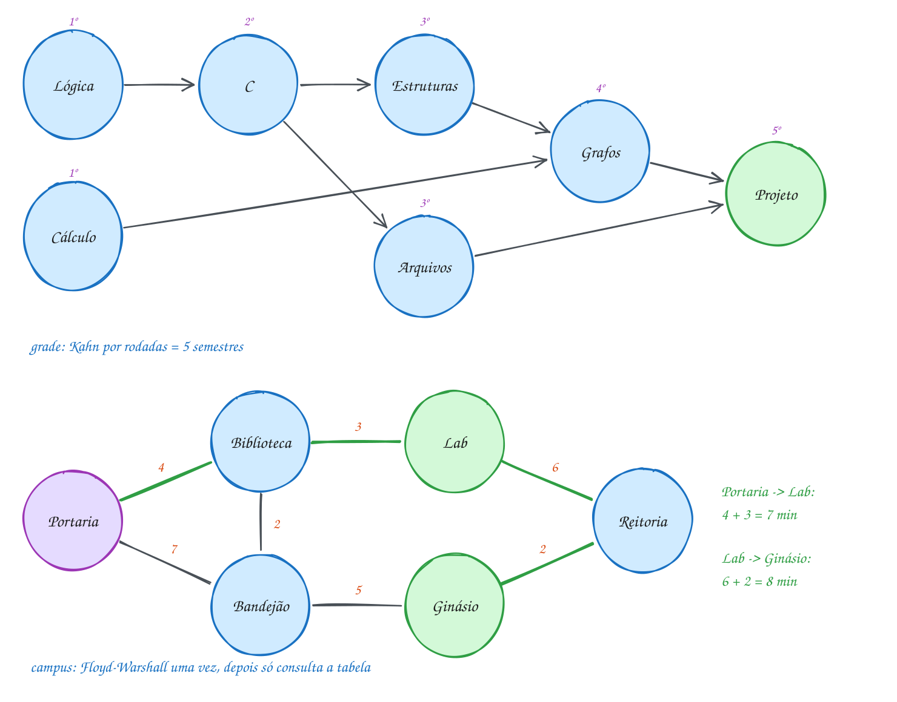
#include <stdio.h>
#define MAX 8
#define INFINITO 1000000000
typedef struct {
int n;
const char *nomes[MAX];
int peso[MAX][MAX]; // 0 = sem aresta
} Grafo;
void liga(Grafo *g, int a, int b, int peso, int mao_dupla) {
g->peso[a][b] = peso;
if (mao_dupla) g->peso[b][a] = peso;
}
// pré-requisitos: Kahn por rodadas; devolve quantos semestres (ou -1 se houver ciclo)
int semestres(const Grafo *g) {
int grau[MAX] = {0}, atual[MAX], n_atual = 0, feitas = 0, s = 0;
for (int a = 0; a < g->n; a++)
for (int b = 0; b < g->n; b++) grau[b] += g->peso[a][b] != 0;
for (int v = 0; v < g->n; v++)
if (grau[v] == 0) atual[n_atual++] = v;
while (n_atual > 0) {
int prox[MAX], n_prox = 0;
printf(" %dº semestre:", ++s);
for (int i = 0; i < n_atual; i++) {
int u = atual[i];
printf(" %s", g->nomes[u]);
feitas++;
for (int v = 0; v < g->n; v++)
if (g->peso[u][v] && --grau[v] == 0) prox[n_prox++] = v;
}
printf("\n");
for (int i = 0; i < n_prox; i++) atual[i] = prox[i];
n_atual = n_prox;
}
return feitas == g->n ? s : -1;
}
// rotas: Floyd-Warshall com a matriz de próximo passo
void todas_as_rotas(const Grafo *g, int d[][MAX], int prox[][MAX]) {
for (int i = 0; i < g->n; i++)
for (int j = 0; j < g->n; j++) {
d[i][j] = (i == j) ? 0 : (g->peso[i][j] ? g->peso[i][j] : INFINITO);
prox[i][j] = (i == j || g->peso[i][j]) ? j : -1;
}
for (int k = 0; k < g->n; k++)
for (int i = 0; i < g->n; i++)
for (int j = 0; j < g->n; j++)
if (d[i][k] + d[k][j] < d[i][j]) {
d[i][j] = d[i][k] + d[k][j];
prox[i][j] = prox[i][k];
}
}
void mostra_rota(const Grafo *g, int d[][MAX], int prox[][MAX], int a, int b) {
printf(" %d min: %s", d[a][b], g->nomes[a]);
for (int v = a; v != b;) {
v = prox[v][b]; // um passo rumo a b
printf(" -> %s", g->nomes[v]);
}
printf("\n");
}
int main(void) {
Grafo grade = {.n = 7, .nomes = {"Lógica", "Cálculo", "C", "Estruturas", "Arquivos", "Grafos", "Projeto"}};
liga(&grade, 0, 2, 1, 0); // Lógica antes de C (dirigido; o peso só marca a seta)
liga(&grade, 2, 3, 1, 0);
liga(&grade, 2, 4, 1, 0);
liga(&grade, 1, 5, 1, 0);
liga(&grade, 3, 5, 1, 0);
liga(&grade, 4, 6, 1, 0);
liga(&grade, 5, 6, 1, 0);
printf("Grade:\n");
int s = semestres(&grade);
if (s < 0) printf(" pré-requisito circular!\n");
else printf(" formatura em %d semestres\n", s);
Grafo campus = {.n = 6, .nomes = {"Portaria", "Biblioteca", "Lab", "Bandejão", "Ginásio", "Reitoria"}};
liga(&campus, 0, 1, 4, 1); // minutos a pé, mão dupla
liga(&campus, 0, 3, 7, 1);
liga(&campus, 1, 2, 3, 1);
liga(&campus, 1, 3, 2, 1);
liga(&campus, 3, 4, 5, 1);
liga(&campus, 2, 5, 6, 1);
liga(&campus, 4, 5, 2, 1);
int d[MAX][MAX], prox[MAX][MAX];
todas_as_rotas(&campus, d, prox);
printf("Campus:\n");
mostra_rota(&campus, d, prox, 0, 2); // da Portaria até o Lab
mostra_rota(&campus, d, prox, 2, 4); // do Lab até o Ginásio
return 0;
}
// Saída:
// Grade:
// 1º semestre: Lógica Cálculo
// 2º semestre: C
// 3º semestre: Estruturas Arquivos
// 4º semestre: Grafos
// 5º semestre: Projeto
// formatura em 5 semestres
// Campus:
// 7 min: Portaria -> Biblioteca -> Lab
// 8 min: Lab -> Reitoria -> Ginásio
O fluxograma é o main: a grade passa pelo Kahn, e o campus passa uma vez
pelo Floyd-Warshall e depois só consulta a tabela:
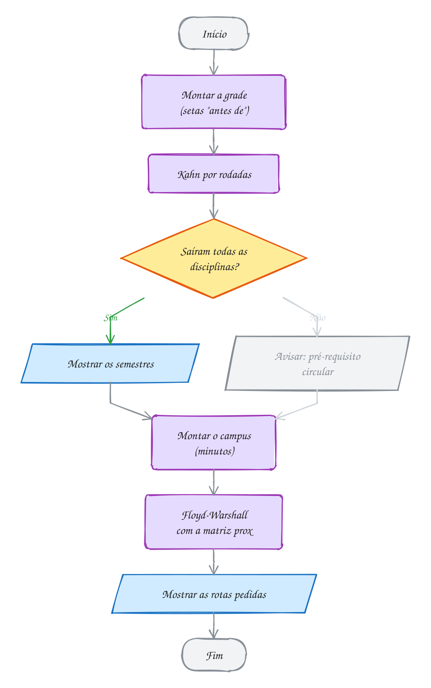
Exemplo A311 · O planejador escolhe: Dijkstra ou Bellman-Ford
#include <stdbool.h>
#include <stdio.h>
#define MAX 6
#define INFINITO 1000000000
typedef struct {
int n;
const char *nomes[MAX];
int custo[MAX][MAX];
bool tem[MAX][MAX]; // existe o trecho? (aqui custo 0 é um custo de verdade)
} Mapa;
bool tem_negativo(const Mapa *m) {
for (int i = 0; i < m->n; i++)
for (int j = 0; j < m->n; j++)
if (m->tem[i][j] && m->custo[i][j] < 0) return true;
return false;
}
void dijkstra(const Mapa *m, int dist[]) {
bool fixo[MAX] = {false};
for (int v = 0; v < m->n; v++) dist[v] = INFINITO;
dist[0] = 0;
for (int passo = 0; passo < m->n; passo++) {
int u = -1;
for (int v = 0; v < m->n; v++)
if (!fixo[v] && dist[v] != INFINITO && (u == -1 || dist[v] < dist[u])) u = v;
if (u == -1) break;
fixo[u] = true;
for (int v = 0; v < m->n; v++)
if (m->tem[u][v] && dist[u] + m->custo[u][v] < dist[v]) dist[v] = dist[u] + m->custo[u][v];
}
}
bool bellman_ford(const Mapa *m, int dist[]) { // false: ciclo negativo
for (int v = 0; v < m->n; v++) dist[v] = INFINITO;
dist[0] = 0;
for (int r = 0; r <= m->n - 1; r++) { // a última volta (r == n - 1) é a extra
bool mudou = false;
for (int u = 0; u < m->n; u++)
for (int v = 0; v < m->n; v++)
if (m->tem[u][v] && dist[u] != INFINITO && dist[u] + m->custo[u][v] < dist[v]) {
dist[v] = dist[u] + m->custo[u][v];
mudou = true;
}
if (!mudou) return true;
if (r == m->n - 1) return false; // mudou até na rodada extra
}
return true;
}
void planeja(const Mapa *m, const char *titulo) {
int dist[MAX];
printf("%s: ", titulo);
if (tem_negativo(m)) {
printf("tem trecho negativo, uso Bellman-Ford\n");
if (!bellman_ford(m, dist)) {
printf(" ciclo negativo: não existe rota mais barata\n");
return;
}
} else {
printf("tudo >= 0, uso Dijkstra\n");
dijkstra(m, dist);
}
for (int v = 1; v < m->n; v++) printf(" %s: R$ %d\n", m->nomes[v], dist[v]);
}
void trecho(Mapa *m, int a, int b, int c) {
m->tem[a][b] = true;
m->custo[a][b] = c;
}
int main(void) {
Mapa dia = {.n = 4, .nomes = {"Loja", "Bairro A", "Bairro B", "Bairro C"}};
trecho(&dia, 0, 1, 8);
trecho(&dia, 0, 2, 3);
trecho(&dia, 2, 1, 4);
trecho(&dia, 1, 3, 2);
planeja(&dia, "Entrega de dia");
Mapa noite = dia; // copia a struct inteira
trecho(&noite, 2, 1, -2); // à noite, levar o reciclável do B ao A paga R$ 2
planeja(&noite, "Coleta de noite");
Mapa feriado = noite;
trecho(&feriado, 1, 2, 0); // no feriado, voltar do A ao B não custa nada
planeja(&feriado, "Coleta no feriado");
return 0;
}
// Saída:
// Entrega de dia: tudo >= 0, uso Dijkstra
// Bairro A: R$ 7
// Bairro B: R$ 3
// Bairro C: R$ 9
// Coleta de noite: tem trecho negativo, uso Bellman-Ford
// Bairro A: R$ 1
// Bairro B: R$ 3
// Bairro C: R$ 3
// Coleta no feriado: tem trecho negativo, uso Bellman-Ford
// ciclo negativo: não existe rota mais barata
//
// No feriado, A -> B -> A custa 0 - 2 = -2: cada volta "paga" R$ 2. O vetor
// tem[][] separado do custo deixa o 0 ser um custo de verdade (o trecho
// A -> B grátis), coisa que a matriz com "0 = sem aresta" não permitiria.
gcc ~/LPEDC/material/A311.c -o ~/LPEDC/material/A311 && ~/LPEDC/material/A311
Exemplo A312 · Instalar só o necessário, na ordem certa
#include <stdbool.h>
#include <stdio.h>
#define V 8
enum { BRANCO, CINZA, PRETO };
const char *pacotes[V] = {"editor", "jogo", "interface", "som", "imagem", "fontes", "zlib", "libc"};
int precisa[V][V]; // precisa[a][b] = 1: a só funciona com b instalado
bool instalado[V];
int cor[V];
// DFS a partir do pedido: instala as dependências antes (pós-ordem)
bool instala(int u) {
if (instalado[u]) return true; // já está no sistema: nada a fazer
cor[u] = CINZA;
for (int v = 0; v < V; v++) {
if (!precisa[u][v]) continue;
if (cor[v] == CINZA) {
printf(" erro: %s e %s dependem um do outro\n", pacotes[u], pacotes[v]);
return false;
}
if (!instala(v)) return false;
}
cor[u] = PRETO;
instalado[u] = true;
printf(" instalando %s\n", pacotes[u]);
return true;
}
void pede(int p) {
printf("> instalar %s\n", pacotes[p]);
for (int v = 0; v < V; v++)
if (!instalado[v]) cor[v] = BRANCO;
if (instalado[p]) printf(" %s já está instalado\n", pacotes[p]);
else instala(p);
}
int main(void) {
int deps[][2] = {{0, 2}, {0, 5}, {1, 2}, {1, 3}, {1, 4}, {2, 5}, {2, 7},
{3, 7}, {4, 6}, {5, 6}, {6, 7}};
for (int k = 0; k < 11; k++) precisa[deps[k][0]][deps[k][1]] = 1;
pede(0); // editor
pede(1); // jogo: boa parte já veio com o editor
pede(5); // fontes
return 0;
}
// Saída:
// > instalar editor
// instalando libc
// instalando zlib
// instalando fontes
// instalando interface
// instalando editor
// > instalar jogo
// instalando som
// instalando imagem
// instalando jogo
// > instalar fontes
// fontes já está instalado
//
// A DFS só visita o que o pedido alcança: o jogo não instala nada do editor,
// e o editor não puxa som nem imagem. É uma ordenação topológica do pedaço
// do grafo que interessa, não do grafo inteiro.
gcc ~/LPEDC/material/A312.c -o ~/LPEDC/material/A312 && ~/LPEDC/material/A312
Exercício E931 · ★☆☆
O campus tem seis prédios (índices 0 a 5: Portaria, Biblioteca, Lab, Bandejão, Ginásio e Reitoria), ligados por caminhos de mão dupla, em minutos:
Portaria-Biblioteca 4 Portaria-Bandejão 7 Biblioteca-Lab 3
Biblioteca-Bandejão 2 Bandejão-Ginásio 5 Lab-Reitoria 6
Ginásio-Reitoria 2
Escreva o programa: guarde o grafo numa matriz, rode o Floyd-Warshall e mostre a tabela (uma linha por prédio, com o índice e cada número em %3d) e o par de prédios mais distante um do outro, o "diâmetro" do campus (o primeiro par com a maior distância, percorrendo a tabela linha por linha).
Saída esperada:
0: 0 4 7 6 11 13
1: 4 0 3 2 7 9
2: 7 3 0 5 8 6
3: 6 2 5 0 5 7
4: 11 7 8 5 0 2
5: 13 9 6 7 2 0
Mais longe: Portaria e Reitoria, 13 min
Exercício E933 · ★★☆
O governo do estado vai asfaltar o mínimo de estradas que ligue as cinco regiões (árvore geradora mínima). Um deputado reclama: "da Capital até a Serra, a viagem vai ficar bem mais longa". As regiões (índices 0 a 4) são Capital, Agreste, Sertão, Litoral e Serra. As estradas possíveis (km, mão dupla), na ordem da lista:
Capital-Litoral 3, Capital-Agreste 7, Litoral-Agreste 5,
Agreste-Sertão 6, Litoral-Serra 9, Serra-Sertão 4, Capital-Serra 10
Escreva o programa: monte a árvore mínima com Kruskal (mostre as estradas na ordem em que entram e o total), guarde as estradas da árvore numa segunda matriz e rode o Floyd-Warshall nas duas matrizes para comparar a viagem Capital -> Serra.
Saída esperada:
Rede mínima: Capital-Litoral, Serra-Sertão, Litoral-Agreste, Agreste-Sertão (18 km)
Capital -> Serra pela rede mínima: 18 km
Capital -> Serra pelo melhor caminho: 10 km
Exercício E934 · ★★☆
A faculdade tem oito disciplinas (índices 0 a 7: Algoritmos, Cálculo I, Inglês, Física, Cálculo II, Estruturas, Redes e TCC), com estes pré-requisitos:
Algoritmos -> Estruturas Cálculo I -> Cálculo II Cálculo I -> Física
Estruturas -> Redes Cálculo II -> TCC Redes -> TCC
Só dá para cursar DUAS por semestre. Escreva planeja(limite, mostrar): a cada semestre, escolhe até "limite" disciplinas liberadas (grau de entrada 0 e ainda não feitas), as de menor índice primeiro, e só depois do semestre desconta os graus das que dependem delas. Devolve o número de semestres (ou -1 se travar) e mostra os semestres quando mostrar for true. Compare sem limite e com limite 2.
Saída esperada:
Sem limite: 4 semestres
Com no máximo 2 por semestre:
1º: Algoritmos Cálculo I
2º: Inglês Física
3º: Cálculo II Estruturas
4º: Redes
5º: TCC
total: 5 semestres
Exercício E936 · ★★★
O entregador sai da Loja, visita os três clientes do dia (Ana, Bruno e Carla) em alguma ordem e volta para a Loja. Os pontos (índices 0 a 5) são Loja, Ana, Bruno, Carla, Praça e Ponte; Praça e Ponte servem só de passagem. As ruas, de mão dupla, em minutos:
Loja-Praça 4, Loja-Ponte 6, Praça-Ana 3, Praça-Bruno 5, Ponte-Carla 2,
Ana-Bruno 4, Bruno-Carla 3, Ana-Ponte 7, Loja-Carla 12
Rode o Floyd-Warshall para ter o tempo entre quaisquer dois pontos e depois teste TODAS as ordens de visita (as permutações por troca do assunto 0126), mostrando cada roteiro com o tempo total e, no fim, o melhor (o primeiro de menor tempo).
Saída esperada:
Loja -> Ana -> Bruno -> Carla -> Loja: 22 min
Loja -> Ana -> Carla -> Bruno -> Loja: 26 min
Loja -> Bruno -> Ana -> Carla -> Loja: 28 min
Loja -> Bruno -> Carla -> Ana -> Loja: 26 min
Loja -> Carla -> Bruno -> Ana -> Loja: 22 min
Loja -> Carla -> Ana -> Bruno -> Loja: 28 min
Melhor roteiro (22 min): Loja -> Ana -> Bruno -> Carla -> Loja
30 exercícios que misturam os assuntos do módulo, no ritmo da prova. Arquivos P2301.c a P2330.c, em material/; resoluções em _respostas/23-grafos-avancados/lista/.
Exercício P2301 · ★☆☆ · Grupos do condomínio
No condomínio, nove moradores (índices 0 a 8) estão em grupos de conversa: Ana, Bia, Caio, Duda, Edu, Fabi, Gil, Hugo e Iara. As amizades, de mão dupla, são:
Ana-Caio, Caio-Gil, Bia-Duda, Duda-Hugo, Edu-Fabi
Escreva o programa do zero. Uma DFS dá a cada morador o número do seu componente (grupo[u], começando em 1, na ordem do primeiro morador de cada grupo). Mostre os grupos e depois responda, em O(1) cada, se estes pares estão no mesmo grupo: Ana e Gil, Bia e Edu, Hugo e Bia, Iara e Ana.
Saída esperada:
Grupo 1: Ana Caio Gil
Grupo 2: Bia Duda Hugo
Grupo 3: Edu Fabi
Grupo 4: Iara
Ana e Gil: mesmo grupo
Bia e Edu: grupos diferentes
Hugo e Bia: mesmo grupo
Iara e Ana: grupos diferentes
Resposta esperada: 4 grupos (Iara fica sozinha); a consulta é só grupo[a] == grupo[b].
Exercício P2302 · ★☆☆ · O cano que fecha o circuito
Na vila, os canos de água (mão dupla) ligam o Poço e cinco casas (índices 0 a 5: Poço, Ana, Beto, Cida, Davi, Elza):
Poço-Ana, Ana-Beto, Beto-Cida, Cida-Davi, Ana-Davi, Davi-Elza
Num grafo NÃO dirigido não precisa de três cores: basta lembrar o pai de cada vértice na DFS. Um vizinho já visitado que não é o pai fecha um circuito. Escreva o programa do zero: mostre o cano que fecha o circuito e o circuito inteiro, subindo de pai em pai. Depois a vila tira o cano Ana-Davi; analise de novo. Examine os vizinhos em ordem de índice.
Saída esperada:
Rede atual: o cano Davi-Ana fecha o circuito Ana - Beto - Cida - Davi - Ana
Rede nova: sem circuito
Resposta esperada: o cano Davi-Ana fecha Ana - Beto - Cida - Davi - Ana; sem o cano Ana-Davi, a rede vira árvore e não tem circuito.
Exercício P2303 · ★☆☆ · Referência circular na planilha
Na planilha do orçamento, a fórmula de uma célula usa o valor de outras (seta a -> b: a fórmula de a usa b). Na planilha de maio:
A1 -> B1, B1 -> C1, C1 -> B2, B2 -> D1, D1 -> B1, A2 -> C2
O programa abaixo já tem a DFS de três cores pela metade. Complete a função visita(u): além de achar a seta que chega num CINZA, ela guarda em pai[] quem descobriu cada célula e, ao achar o ciclo, guarda ini (a célula cinza) e fim (quem apontou para ela). A função confere já usa ini, fim e pai[] para mostrar o ciclo.
Saída esperada:
Planilha de maio: referência circular B1 -> C1 -> B2 -> D1 -> B1
Planilha de junho: sem referência circular
Resposta esperada: B1 -> C1 -> B2 -> D1 -> B1 em maio; em junho, sem a seta D1 -> B1, nenhum ciclo.
Exercício P2304 · ★☆☆ · O manual do guarda-roupa
Montar o guarda-roupa tem sete passos (índices 0 a 6): separar, base, laterais, prateleiras, portas, puxadores e fixar. As regras "a antes de b" do manual são:
separar -> base, base -> laterais, laterais -> prateleiras,
laterais -> portas, portas -> puxadores, prateleiras -> fixar,
portas -> fixar
Escreva kahn(rotulo) do zero: o Kahn com fila mostra a ordem de montagem. Quando a fila esvazia antes de sair todo mundo, o manual tem ciclo: mostre também os passos que ficaram travados (grau de entrada ainda maior que 0). Chame para o manual certo e para a reimpressão com erro, que acrescentou a regra puxadores -> laterais.
Saída esperada:
Manual certo: separar base laterais prateleiras portas puxadores fixar
Manual com erro: separar base
travados: laterais prateleiras portas puxadores fixar
Resposta esperada: com o erro só saem separar e base; os outros cinco ficam travados (laterais, portas e puxadores formam o ciclo, e prateleiras e fixar esperam por eles).
Exercício P2305 · ★☆☆ · Os relógios da DFS
O programa abaixo monta, com a DFS, a ordem das etapas de publicar um sistema (seta a -> b: a etapa a vem antes de b):
lint -> testes, testes -> build, build -> deploy, banco -> deploy,
deploy -> aviso
Hoje ele não mostra nada. Instrumente-o como no Cormen: um relógio global que avança 1 quando a DFS DESCOBRE um vértice (guarde em d[u]) e 1 quando ela TERMINA o vértice (guarde em f[u]). Mostre d e f de cada etapa e a ordem, com o f de cada uma entre parênteses: ela sai em ordem decrescente de término.
Saída esperada:
lint d = 1 f = 10
testes d = 2 f = 9
build d = 3 f = 8
banco d = 11 f = 12
deploy d = 4 f = 7
aviso d = 5 f = 6
Ordem: banco(12) lint(10) testes(9) build(8) deploy(7) aviso(6)
Resposta esperada: lint vai de 1 a 10; banco, que ninguém alcança, só é descoberto no 11 e termina no 12, por isso abre a ordem.
Exercício P2306 · ★☆☆ · Fibra nas escolas rurais
A secretaria de educação vai ligar seis escolas rurais com fibra óptica: Sede, Vila Amazônia, Caburi, Mocambo, Tracajá e Zé Açu (índices 0 a 5). Os trechos possíveis (mão dupla, em km):
Sede-Vila Amazônia 7, Sede-Caburi 12, Vila Amazônia-Caburi 2,
Vila Amazônia-Mocambo 9, Caburi-Mocambo 6, Caburi-Tracajá 10,
Mocambo-Tracajá 3, Mocambo-Zé Açu 4, Tracajá-Zé Açu 5, Sede-Zé Açu 15
Escreva o Kruskal do zero: um vetor de struct {a, b, km}, qsort do mais curto para o mais longo e union-find com pai[] (sem compressão mesmo). Mostre cada trecho aceito e cada trecho recusado, na ordem em que o algoritmo os examina, e pare quando tiver V - 1 trechos.
Saída esperada:
aceita Vila Amazônia-Caburi (2 km)
aceita Mocambo-Tracajá (3 km)
aceita Mocambo-Zé Açu (4 km)
recusa Tracajá-Zé Açu (5 km): fecharia ciclo
aceita Caburi-Mocambo (6 km)
aceita Sede-Vila Amazônia (7 km)
Total: 22 km
Resposta esperada: só Tracajá-Zé Açu é recusado; total 22 km.
Exercício P2307 · ★☆☆ · As chaves do Prim
Uma usina vai levar energia a quatro comunidades ribeirinhas. O Prim abaixo, em O(V²), já monta a rede a partir da Usina e mostra cada linha que entra. Instrumente-o: depois de cada vértice entrar e atualizar os vizinhos, mostre o vetor chave[] inteiro, com "-" para infinito e um "*" colado em quem já está na rede. Use "%3d" para cada número, com um espaço antes, e " -" para infinito.
Saída esperada:
entra Usina
chave: 0* 6 3 - 9
entra Bom Jesus: Usina - Bom Jesus, 3 km
chave: 0* 4 3* 7 8
entra Boa Vista: Bom Jesus - Boa Vista, 4 km
chave: 0* 4* 3* 2 8
entra Santa Luzia: Boa Vista - Santa Luzia, 2 km
chave: 0* 4* 3* 2* 5
entra São José: Santa Luzia - São José, 5 km
chave: 0* 4* 3* 2* 5*
Total: 14 km
Resposta esperada: total de 14 km; a última linha de chaves é 0* 4* 3* 2* 5*.
Exercício P2308 · ★☆☆ · Bellman-Ford rodada a rodada
O app de corrida dá um cupom no trecho Terminal -> Shopping (custo R$ -2). Os trechos, de mão única, estão na lista do main numa ordem ruim de propósito para o algoritmo: os trechos que saem da Casa vêm por último.
Casa -> Shopping 8, Casa -> Terminal 5, Terminal -> Shopping -2,
Shopping -> Faculdade 4, Terminal -> Faculdade 9,
Faculdade -> Estágio 3, Shopping -> Estágio 10
Complete o laço das rodadas: em cada uma, relaxe os trechos na ordem da lista; se nada mudou, mostre que parou e saia; se mudou, mostre o vetor dist com a função mostra (já pronta). Faça no máximo V - 1 rodadas.
Saída esperada:
rodada 0: 0 - - - -
rodada 1: 0 8 5 - -
rodada 2: 0 3 5 12 18
rodada 3: 0 3 5 7 13
rodada 4: 0 3 5 7 10
Resposta esperada: no fim, Shopping R$ 3, Terminal 5, Faculdade 7 e Estágio 10; o Estágio só chega no valor certo na rodada 4.
Exercício P2309 · ★☆☆ · Floyd-Warshall quadro a quadro
Os tempos de ônibus (minutos, mão única) entre quatro bairros:
Centro -> Adrianópolis 10, Adrianópolis -> Ponta Negra 25,
Centro -> Ponta Negra 40, Ponta Negra -> Cidade Nova 15,
Cidade Nova -> Centro 20, Adrianópolis -> Cidade Nova 30
Complete floyd(d): o Floyd-Warshall com o k no laço de fora e, depois de cada k, a linha "Depois de k = SIGLA:" e a matriz (a função mostra está pronta). É assim que a prova cobra: a matriz D(k) de cada rodada.
Saída esperada:
Início:
CEN ADR PNE CNO
CEN 0 10 40 -
ADR - 0 25 30
PNE - - 0 15
CNO 20 - - 0
Depois de k = CEN:
CEN ADR PNE CNO
CEN 0 10 40 -
ADR - 0 25 30
PNE - - 0 15
CNO 20 30 60 0
Depois de k = ADR:
CEN ADR PNE CNO
CEN 0 10 35 40
ADR - 0 25 30
PNE - - 0 15
CNO 20 30 55 0
Depois de k = PNE:
CEN ADR PNE CNO
CEN 0 10 35 40
ADR - 0 25 30
PNE - - 0 15
CNO 20 30 55 0
Depois de k = CNO:
CEN ADR PNE CNO
CEN 0 10 35 40
ADR 50 0 25 30
PNE 35 45 0 15
CNO 20 30 55 0
Resposta esperada: k = PNE não muda nada; na rodada CNO, Ponta Negra chega no Centro em 35 (15 + 20).
Exercício P2310 · ★☆☆ · Quem recebe o recado
Na família, cada um repassa o recado só para algumas pessoas (mão única): Ana -> Bia, Bia -> Caio, Caio -> Ana, Caio -> Davi, Edu -> Davi. Escreva do zero o fecho transitivo pelo algoritmo de Warshall: o Floyd- Warshall com 0 e 1 no lugar de números, em que alcanca[i][j] vira 1 quando alcanca[i][k] e alcanca[k][j] são 1. Mostre a matriz e, para cada pessoa, quantas OUTRAS pessoas recebem o recado dela.
Saída esperada:
Ana Bia Caio Davi Edu
Ana 1 1 1 1 0 chega em 3
Bia 1 1 1 1 0 chega em 3
Caio 1 1 1 1 0 chega em 3
Davi 0 0 0 0 0 chega em 0
Edu 0 0 0 1 0 chega em 1
Resposta esperada: Ana, Bia e Caio chegam em 3 pessoas cada; Davi em nenhuma; Edu só em Davi.
Exercício P2311 · ★★☆ · Kosaraju nas rotas de barco
Oito portos do Amazonas têm barcos de mão única entre eles (seta a -> b: tem barco de a para b). Um grupo de portos é FORTEMENTE CONEXO quando dá para ir de qualquer um deles a qualquer outro, e voltar, só de barco. O algoritmo de Kosaraju acha esses grupos com duas DFS:
1. uma DFS no grafo original anota a ordem de TÉRMINO dos vértices;
2. uma DFS no grafo com as setas INVERTIDAS, começando pelos vértices
do último a terminar para o primeiro: cada DFS nova pinta um grupo.
O programa já faz o passo 1 e monta a matriz inversa. Complete o passo 2: escreva dfs2(u, g) e o laço que a chama, e mostre os grupos (os portos de cada um em ordem de índice).
Saída esperada:
Término da 1ª DFS: Autazes Silves Itacoatiara Careiro Novo Airão Manacapuru Iranduba Manaus
Grupo 1: Manaus Iranduba Manacapuru
Grupo 2: Novo Airão Careiro
Grupo 3: Autazes Itacoatiara Silves
Resposta esperada: 3 grupos: Manaus, Iranduba e Manacapuru; Novo Airão e Careiro; Autazes, Itacoatiara e Silves.
Exercício P2312 · ★★☆ · O alfabeto do idioma inventado
Num jogo, os elfos escrevem com as letras de sempre, mas a ordem do alfabeto deles é outra. Você recebe listas de palavras JÁ em ordem alfabética élfica. Comparando duas palavras vizinhas, a primeira letra diferente diz quem vem antes ("cab" < "cad": b antes de d). Se uma é prefixo da outra, não há informação.
Lista 1: cab, cad, ae, aed, eb, bd
Lista 2: ba, bc, ca, ab
Escreva descobre(rotulo, palavras, n) do zero: mostre cada regra que a lista dá e, com o Kahn sobre as 26 letras (só as que aparecem nas palavras), o alfabeto élfico. Se o Kahn não consegue tirar todas as letras, a lista é inconsistente. Escolha da fila: letras livres entram em ordem de 'a' a 'z'.
Saída esperada:
Lista 1
cab < cad: b antes de d
cad < ae: c antes de a
aed < eb: a antes de e
eb < bd: e antes de b
alfabeto: caebd
Lista 2
ba < bc: a antes de c
bc < ca: b antes de c
ca < ab: c antes de a
lista inconsistente: as regras formam um ciclo
Resposta esperada: Lista 1 dá o alfabeto caebd; a Lista 2 tem o ciclo a antes de c e c antes de a.
Exercício P2313 · ★★☆ · A trilha que vale mais pontos
No jogo de plataforma, você sai do Início e chega ao Chefão passando por fases; cada passagem (só para a frente) dá pontos:
Início -> Floresta 5, Início -> Caverna 3, Floresta -> Rio 6,
Caverna -> Rio 9, Floresta -> Castelo 2, Rio -> Castelo 4,
Rio -> Chefão 7, Castelo -> Chefão 8
Num grafo qualquer, o caminho MAIS LONGO é um problema difícil. Num DAG ele é fácil: a mesma ideia do caminho mínimo em DAG, relaxando na ordem topológica, mas guardando o MAIOR total. Escreva o programa do zero: ordem topológica pelo Kahn, o maior total até cada fase e a trilha campeã (refeita por pai[]).
Saída esperada:
Ordem: Início Floresta Caverna Rio Castelo Chefão
Início: 0 pontos
Floresta: 5 pontos
Caverna: 3 pontos
Rio: 12 pontos
Castelo: 16 pontos
Chefão: 24 pontos
Melhor trilha: Início -> Caverna -> Rio -> Castelo -> Chefão
Resposta esperada: 24 pontos, pela Caverna (3 + 9 + 4 + 8), contra 23 pela Floresta.
Exercício P2314 · ★★☆ · A descida do rio
Descendo o rio de caiaque, cada trecho gasta energia, mas as corredeiras a favor EMPURRAM o caiaque e devolvem energia (custo negativo). Como o rio só desce, o grafo é um DAG. O programa já calcula o gasto mínimo com Bellman-Ford e conta quantas relaxações ele tenta.
Estenda: escreva dag(dist), que faz a ordem topológica (Kahn) e relaxa as arestas que saem de cada vértice uma vez só, na ordem topológica, contando as tentativas. Mostre as duas respostas lado a lado e as duas contagens.
Saída esperada:
Ponto BF DAG
Cabeceira 0 0
Pedral 4 4
Remanso 1 1
Cachoeira -1 -1
Praia 0 0
Foz -4 -4
Relaxações tentadas: Bellman-Ford 45, DAG 9
Resposta esperada: as duas colunas iguais (a Foz fica em -4) e 9 tentativas contra 45 do Bellman-Ford.
Exercício P2315 · ★★☆ · O union-find que solta galhos
Ache o bug. O parque estadual vai ligar seis pontos com passarelas (custo em R$ mil, mão dupla), gastando o mínimo. O Kruskal abaixo compila e roda, mas a saída tem um ciclo (Portão-Lago, Portão-Mirante e Lago-Mirante) e o Camping ficou de fora:
Saída que aparece:
Portão-Lago (1)
Portão-Mirante (2)
Lago-Mirante (3)
Mirante-Gruta (4)
Gruta-Cachoeira (5)
Total: R$ 15 mil
O erro está numa linha só, na hora de juntar dois grupos. Conserte.
Saída esperada:
Portão-Lago (1)
Portão-Mirante (2)
Mirante-Gruta (4)
Gruta-Cachoeira (5)
Cachoeira-Camping (6)
Total: R$ 18 mil
Resposta esperada: troque a linha por pai[ra] = rb; total R$ 18 mil, com Lago-Mirante recusada e Cachoeira-Camping aceita.
Exercício P2316 · ★★☆ · O Prim preguiçoso e as sobras do heap
A prefeitura vai ligar cinco praças com cabo de Wi-Fi público (metros, mão dupla). O heap de mínimo já está pronto: poe(item) e tira(). Escreva o laço do Prim preguiçoso a partir da Matriz: o heap guarda arestas (peso, de, para); ao tirar uma, se o "para" já está na rede, ela é uma SOBRA (o vértice entrou por um caminho mais barato depois que ela foi posta) e é descartada. Mostre cada item tirado e pare quando os cinco estiverem na rede.
Saída esperada:
tira Matriz-Porto (1): entra Porto
tira Porto-Feira (2): entra Feira
tira Matriz-Feira (4): descartada, Feira já está na rede
tira Feira-Escola (5): entra Escola
tira Escola-Ginásio (3): entra Ginásio
Total: 11 metros; sobraram 2 itens no heap
Resposta esperada: só Matriz-Feira (4) é descartada; total 11 metros e 2 itens ainda no heap no fim (Porto-Escola e Porto-Ginásio).
Exercício P2317 · ★★☆ · A rota do BRT
O BRT liga cinco estações (minutos, mão dupla). O programa já calcula a tabela de distâncias com Floyd-Warshall, mas o passageiro quer saber POR ONDE ir. Estenda: acrescente a matriz prox[i][j], a primeira estação depois de i no melhor caminho até j, atualize-a dentro do Floyd e escreva rota(a, b), que mostra o tempo e o caminho. Mostre as rotas Terminal -> Aeroporto, Universidade -> Rodoviária, Aeroporto -> Terminal e Rodoviária -> Universidade.
Saída esperada:
Terminal -> Aeroporto (17 min): Terminal -> Centro -> Rodoviária -> Aeroporto
Universidade -> Rodoviária (9 min): Universidade -> Aeroporto -> Rodoviária
Aeroporto -> Terminal (17 min): Aeroporto -> Rodoviária -> Centro -> Terminal
Rodoviária -> Universidade (9 min): Rodoviária -> Aeroporto -> Universidade
Resposta esperada: Terminal -> Aeroporto em 17 min pelo Centro e pela Rodoviária; a linha direta Terminal-Universidade (20) nunca é usada.
Exercício P2318 · ★★☆ · Dijkstra e Bellman-Ford na mesma balança
Seis cidades do Pará (siglas BEL, CAS, BRA, CAP, SAL, ABA) estão ligadas por estradas de mão única, todas com km positivos. O programa tem o Dijkstra em O(V²) e conta quantas arestas ele olha. Estenda: escreva bellman_ford(origem, dist), que varre a matriz inteira em cada rodada (u de 0 a V - 1, v de 0 a V - 1), para cedo quando nada muda e soma em olhadas_bf cada aresta que olha. Rode os dois a partir de CADA cidade, mostre a tabela do Dijkstra, confira se as duas tabelas são iguais e mostre as contagens.
Saída esperada:
BEL CAS BRA CAP SAL ABA
BEL 0 70 190 160 220 60
CAS 370 0 120 90 150 430
BRA 270 340 0 430 50 330
CAP 280 350 30 0 60 340
SAL 220 290 410 380 0 280
ABA 420 50 170 140 200 0
As duas tabelas conferem
Arestas olhadas: Dijkstra 60, Bellman-Ford 170
Resposta esperada: as tabelas conferem; Dijkstra 60 arestas olhadas (6 origens × 10), Bellman-Ford 170.
Exercício P2319 · ★★☆ · A cerca que fecha o curral
O vaqueiro estica arame entre sete mourões (M0 a M6), uma cerca por vez, nesta ordem:
M0-M1, M1-M2, M3-M4, M2-M3, M4-M0, M5-M6, M2-M5, M6-M1, M3-M0
Cada cerca que liga dois mourões JÁ ligados por arame fecha um curral (um ciclo). Escreva do zero, com union-find (acha com compressão de caminho), um programa que diz, a cada cerca, se ela fecha um curral ou só estende o arame, e o total de currais. Sem DFS: o grafo cresce aresta por aresta e o union-find responde cada uma em tempo quase constante.
Saída esperada:
cerca 1 (M0-M1): só estende o arame
cerca 2 (M1-M2): só estende o arame
cerca 3 (M3-M4): só estende o arame
cerca 4 (M2-M3): só estende o arame
cerca 5 (M4-M0): fecha o curral 1
cerca 6 (M5-M6): só estende o arame
cerca 7 (M2-M5): só estende o arame
cerca 8 (M6-M1): fecha o curral 2
cerca 9 (M3-M0): fecha o curral 3
Currais fechados: 3
Resposta esperada: as cercas 5, 8 e 9 fecham currais; 3 no total (9 cercas - 6 que bastam para ligar 7 mourões).
Exercício P2320 · ★★☆ · Quantos jeitos de descer a ladeira
Em Olinda, um bloco de carnaval quer descer do Alto da Sé até a Praia sem subir nunca. As ladeiras (só de descida) ligam:
Alto da Sé -> Amparo, Alto da Sé -> Misericórdia, Amparo -> Bonsucesso,
Misericórdia -> Bonsucesso, Misericórdia -> Carmo, Bonsucesso -> Varadouro,
Carmo -> Varadouro, Bonsucesso -> Praia, Varadouro -> Praia,
Carmo -> Praia, Amparo -> Carmo
Quantos trajetos diferentes chegam em cada ponto? Escreva do zero: ordem topológica pelo Kahn e, nessa ordem, jeitos[v] += jeitos[u] para cada ladeira u -> v, com jeitos[Alto da Sé] = 1. Mostre cada ponto na ordem topológica com a sua contagem.
Saída esperada:
Alto da Sé: 1
Amparo: 1
Misericórdia: 1
Bonsucesso: 2
Carmo: 2
Varadouro: 4
Praia: 8
Resposta esperada: 8 trajetos chegam à Praia.
Exercício P2321 · ★★★ · A segunda melhor rede
Cinco aldeias vão ser ligadas por rádio-internet (custo em R$ mil, mão dupla). A árvore mínima é a primeira escolha, mas o órgão de controle exige um plano B: a SEGUNDA MELHOR árvore geradora, a mais barata que seja diferente da mínima. As ligações possíveis:
Aldeia Nova-Boa Esperança 4, Aldeia Nova-Cajual 6,
Boa Esperança-Cajual 5, Boa Esperança-Daracuí 3, Cajual-Daracuí 7,
Cajual-Extrema 8, Daracuí-Extrema 9
Para grafo pequeno há um jeito direto: a segunda melhor árvore difere da mínima em UMA aresta. Então, para cada aresta da árvore mínima, rode o Kruskal de novo proibindo só ela e fique com o menor total. Escreva o programa do zero: mostre a árvore mínima, o total de cada tentativa e a troca que dá a segunda melhor (a primeira tentativa com o menor total).
Saída esperada:
Árvore mínima: 20
Boa Esperança-Daracuí (3)
Aldeia Nova-Boa Esperança (4)
Boa Esperança-Cajual (5)
Cajual-Extrema (8)
sem Boa Esperança-Daracuí (3): 24
sem Aldeia Nova-Boa Esperança (4): 22
sem Boa Esperança-Cajual (5): 21
sem Cajual-Extrema (8): 21
Segunda melhor: 21, trocando Boa Esperança-Cajual (5) por Aldeia Nova-Cajual (6)
Resposta esperada: mínima 20; segunda melhor 21, trocando Boa Esperança-Cajual (5) por Aldeia Nova-Cajual (6). Tirar Cajual-Extrema também dá 21: o plano B nem sempre é único.
Exercício P2322 · ★★★ · Arbitragem na casa de câmbio
A casa de câmbio publica quanto se recebe de cada moeda por 1 unidade de outra (Real, Dólar, Euro, Libra, Peso). ARBITRAGEM é uma volta de trocas que termina com mais dinheiro do que começou: o produto das taxas da volta passa de 1. O truque do Cormen: com peso -log(taxa), produto maior que 1 vira soma negativa, e arbitragem vira CICLO NEGATIVO.
O main já tem as 20 taxas. Escreva analisa(rotulo, t, n) do zero:
Saída esperada:
Segunda-feira: arbitragem Dólar -> Euro -> Real -> Dólar
fator do ciclo: 1.0120 (lucro de 1.20%)
Terça-feira: sem arbitragem
Resposta esperada: na segunda, Dólar -> Euro -> Real -> Dólar com fator 1.0120 (0,92 × 5,50 × 0,20); na terça, sem arbitragem.
gcc ~/LPEDC/material/P2322.c -o ~/LPEDC/material/P2322 -lm && ~/LPEDC/material/P2322
Exercício P2323 · ★★★ · Kosaraju de mão trocada
Ache o bug. Uma rede social quer achar as "bolhas": grupos em que todo mundo alcança todo mundo seguindo a relação "segue". Este Kosaraju compila e roda, mas junta a rede inteira numa bolha só, e @dani nem chega de volta em @ana:
Saída que aparece:
Bolha 1: @ana @beto @caio @dani @enzo @fe @gabi
O erro está numa linha só. Conserte.
Saída esperada:
Bolha 1: @ana @beto @caio
Bolha 2: @dani @enzo
Bolha 3: @fe @gabi
Resposta esperada: em dfs2, troque segue[u][v] por inversa[u][v]; saem 3 bolhas: @ana @beto @caio, @dani @enzo e @fe @gabi.
Exercício P2324 · ★★★ · A carreta mais pesada
Cada estrada entre seis cidades tem um limite de peso (toneladas, mão dupla). Uma carreta passa por um caminho se aguentar o trecho MAIS FRACO dele. Para cada par de cidades, qual a carreta mais pesada que consegue ir de uma à outra? As estradas:
Manaus-Itacoatiara 40, Manaus-Humaitá 18, Itacoatiara-Humaitá 25,
Humaitá-Porto Velho 30, Itacoatiara-Porto Velho 12, Humaitá-Lábrea 22,
Porto Velho-Lábrea 35, Manaus-Tefé 15, Tefé-Lábrea 28
Escreva do zero uma variação do Floyd-Warshall (o caminho de GARGALO máximo): passar por k vale min(cap[i][k], cap[k][j]), e fica o maior. Use 0 para "sem estrada" e ignore a diagonal. Mostre a tabela com as siglas MAO ITA HUM PVH LAB TEF e as duas perguntas do fim.
Saída esperada:
MAO ITA HUM PVH LAB TEF
MAO - 40 25 25 25 25
ITA 40 - 25 25 25 25
HUM 25 25 - 30 30 28
PVH 25 25 30 - 35 28
LAB 25 25 30 35 - 28
TEF 25 25 28 28 28 -
Manaus -> Porto Velho: até 25 t
Tefé -> Lábrea: até 28 t
Resposta esperada: Manaus -> Porto Velho até 25 t (por Itacoatiara e Humaitá; a estrada Manaus-Humaitá aguenta só 18) e Tefé -> Lábrea até 28 t, a estrada direta.
Exercício P2325 · ★★★ · Quantas ordens tem a reforma
Contar as ordenações topológicas com backtracking (assunto 0127) gasta um passo por ORDEM: sem regra nenhuma, 12 tarefas teriam 12! = 479 milhões de ordens. A programação dinâmica conta sem listar: jeitos[S] é quantas ordens existem para fazer PRIMEIRO exatamente o conjunto S de tarefas (S guardado como bits de um int). Começa com jeitos[0] = 1 e, para cada S e cada tarefa v fora de S cujos pré-requisitos estão todos em S, soma jeitos[S] em jeitos[S | 1 << v].
Escreva do zero enumera(feitas) (o backtracking) e conta_pd(), com pred[v] = bits dos pré-requisitos de v. Teste os três casos:
Banheiro, 6 tarefas: 0->1, 0->2, 1->3, 3->4, 2->4, 4->5
Casa, 12 tarefas: 0->1, 0->2, 0->3, 1->4, 2->4, 3->5, 4->6, 5->6,
6->7, 6->8, 7->9, 8->10, 9->11, 10->11
Sem regras, 12 tarefas: só a PD (o backtracking demoraria demais)
Saída esperada:
Banheiro (6 tarefas): backtracking 3, PD 3
Casa (12 tarefas): backtracking 120, PD 120
Sem regras (12 tarefas): PD 479001600
Resposta esperada: 3 ordens no banheiro, 120 na casa e 479001600 sem regras.
Exercício P2326 · ★★★ · Onde o ciclo negativo contamina
Num jogo, atravessar portais (mão única) custa energia; alguns devolvem energia (custo negativo). A volta Ponte -> Torre -> Mina -> Ponte custa 3 - 4 - 1 = -2: quem entra nela fica girando e a energia "mínima" de tudo o que vem depois é -infinito. O programa abaixo já faz as V - 1 rodadas do Bellman-Ford e só mostra números. Estenda-o:
Saída esperada:
Base 0
Ponte -infinito
Torre -infinito
Mina -infinito
Vale -infinito
Lago 6
Bosque 7
Ilha inalcançável
Resposta esperada: Ponte, Torre, Mina e Vale em -infinito; Lago 6, Bosque 7, Ilha inalcançável.
Exercício P2327 · ★★★ · O Prim que virou Dijkstra
Ache o bug. A operadora vai ligar cinco torres com o mínimo de cabo (km, mão dupla). O código abaixo parece um Prim, mas a rede sai cara e toda pendurada na Central:
Saída que aparece:
Central - Morro: 5 km
Central - Vila: 6 km
Vila - Usina: 3 km
Central - Sítio: 9 km
Total: 23 km
Isso é a árvore de caminhos mínimos do Dijkstra, não a árvore geradora mínima. O erro está no bloco que atualiza a chave dos vizinhos (duas linhas). Conserte.
Saída esperada:
Central - Morro: 5 km
Morro - Vila: 2 km
Vila - Usina: 3 km
Usina - Sítio: 1 km
Total: 11 km
Resposta esperada: compare e guarde só km[u][v]; total 11 km.
Exercício P2328 · ★★★ · Três zonas de entrega
Uma rede de farmácias vai dividir nove bairros em 3 zonas de entrega, com bairros parecidos juntos e zonas o mais separadas possível. As coordenadas (km) estão no main; a distância é a de quarteirão, |x1 - x2| + |y1 - y2|.
O Kruskal resolve: ordene todos os pares pela distância e vá juntando grupos, mas PARE quando sobrarem 3. A próxima aresta que ligaria dois grupos diferentes é o ESPAÇAMENTO, a menor distância entre zonas, e esse corte é o que deixa o espaçamento máximo. Escreva do zero: monte as 36 arestas, ordene (empate: menor a, depois menor b), mostre as zonas (na ordem do primeiro bairro de cada uma) e o espaçamento.
Saída esperada:
Zona 1: Aleixo Flores Parque 10
Zona 2: Compensa Glória Santo Antônio
Zona 3: Japiim Coroado Distrito
Espaçamento: 4 km (Aleixo-Japiim)
Resposta esperada: Aleixo, Flores e Parque 10; Compensa, Glória e Santo Antônio; Japiim, Coroado e Distrito; espaçamento 4 km (Aleixo-Japiim).
Exercício P2329 · ★★★ · Johnson em miniatura
O Dijkstra não aceita peso negativo, e rodar Bellman-Ford de cada origem custa O(V² E). O algoritmo de Johnson faz um Bellman-Ford só e depois V Dijkstras:
1. calcule h[v], a menor distância de uma origem imaginária q (ligada
a todos com peso 0) até v: é o Bellman-Ford com h[] começando em 0;
2. troque cada peso por w'(u, v) = w(u, v) + h[u] - h[v], que nunca é
negativo;
3. rode o Dijkstra com w' de cada origem e desfaça a troca:
d(u, v) = d'(u, v) - h[u] + h[v].
O programa já tem dijkstra(o, peso, dist) e floyd(d) para conferir. Complete o main com os três passos: mostre h, os pesos novos (na ordem u, v de 0 a 4), a tabela final e se ela bate com a do Floyd-Warshall.
Saída esperada:
h: A=0 B=0 C=-2 D=0 E=-1
Pesos novos: AB=3 AC=6 AE=6 BC=0 CD=0 DB=1 DE=0 EC=4
A B C D E
A 0 3 1 3 2
B - 0 -2 0 -1
C - 3 0 2 1
D - 1 -1 0 -1
E - 6 3 5 0
Floyd-Warshall confere
Resposta esperada: h = 0, 0, -2, 0, -1; a linha de A fica 0 3 1 3 2 e o Floyd-Warshall confere.
Exercício P2330 · ★★★ · Quantas ruas novas no centro histórico
No centro histórico, todas as ruas são de mão única. Hoje não dá para ir de qualquer largo a qualquer outro. A prefeitura quer abrir o MÍNIMO de ruas novas (também de mão única) para que dê. As ruas:
Sé -> Carmo, Carmo -> Rosário, Rosário -> Sé, Rosário -> Mercado,
Mercado -> Teatro, Teatro -> Mercado, Carmo -> Matriz,
Cais -> Matriz, Estação -> Feira, Feira -> Estação, Estação -> Sé
O resultado clássico: encolha cada componente fortemente conexo num ponto só (o grafo vira um DAG). Conte as FONTES (grupos onde nenhuma rua chega de fora) e os SUMIDOUROS (de onde nenhuma rua sai para fora). Se houver mais de um grupo, a resposta é max(fontes, sumidouros); com um grupo só, 0. Escreva do zero: Kosaraju, a marcação de quem entra e quem sai de cada grupo, e a resposta.
Saída esperada:
Grupo 1: Estação Feira (ninguém chega)
Grupo 2: Cais (ninguém chega)
Grupo 3: Sé Carmo Rosário
Grupo 4: Matriz (não sai)
Grupo 5: Mercado Teatro (não sai)
Fontes: 2, sumidouros: 2
Ruas novas, no mínimo: 2
Resposta esperada: 5 grupos, 2 fontes ({Estação, Feira} e {Cais}), 2 sumidouros ({Matriz} e {Mercado, Teatro}): 2 ruas novas.
Problemas para resolver no papel e, quando fizer sentido, num arquivo .c
seu. Eles misturam os assuntos do módulo.
1. Três cores à mão. Grafo dirigido: A → B, A → C, B → C, C → D, D → B. Rode a DFS de três cores a partir de A, examinando os vizinhos em ordem alfabética. Existe ciclo? Qual é a seta que o denuncia, e quem está cinza nesse momento?
Existe. A DFS entra em A, B, C e D, todos cinza. D olha B, que está
cinza: a seta D → B fecha o ciclo B → C → D → B. A seta A → C, que
seria examinada depois, nem chega a ser vista. Com um visitado[] simples o
ciclo também seria achado aqui, mas por sorte: troque D → B por A → D e o
visitado[] gritaria "ciclo" sem haver nenhum.
2. Quantas ordens? DAG: 0 → 2, 1 → 2, 2 → 3, 2 → 4. Quantas ordenações topológicas existem? Qual o Kahn com fila mostra?
4: 0 e 1 vêm antes de 2 em qualquer ordem (2 jeitos), e 3 e 4 vêm depois, em qualquer ordem (2 jeitos): 2 × 2. O Kahn mostra 0 1 2 3 4. O vértice 2 é um "gargalo": todo mundo antes dele, todo mundo depois.
3. Kruskal na rede do poço. Refaça a rede de canos do assunto 0153 com Kruskal. Em que ordem os canos entram? O total muda?
Ordem: Cida-Davi 2, Ana-Beto 3, Poço-Ana 4, Davi-Elza 4, Beto-Cida 5. Depois disso já são 5 canos. Total 18 m, o mesmo do Prim, com os mesmos canos. Só a ordem muda: o Kruskal começa pelo cano mais curto do mapa inteiro, longe do Poço; o Prim cresce a partir do Poço.
4. Quantas árvores mínimas? Triângulo A-B (1), B-C (2), A-C (2), mais C-D (3). Quantas árvores geradoras mínimas existem e qual o custo?
Duas, ambas com custo 6: {A-B, B-C, C-D} e {A-B, A-C, C-D}. O empate entre B-C e A-C permite qualquer um dos dois. Com todos os pesos diferentes, a árvore mínima seria única.
5. Somar uma constante resolve? Alguém propõe: "para usar Dijkstra com pesos negativos, some 10 em todos os pesos". Teste no grafo S → A (-2), A → T (3), S → T (2).
Não resolve. O certo é S → A → T, custo 1. Somando 10: S → A vira 8 e A → T vira 13, total 21; S → T vira 12, e o Dijkstra escolhe S → T. Somar uma constante castiga mais os caminhos com mais arestas, e a ordem entre eles muda. Para isso existe o Bellman-Ford (e, para todos os pares, o algoritmo de Johnson, que repondera os pesos com uma rodada de Bellman-Ford).
6. Rodadas no pior caso. Um caminho 0 → 1 → 2 → 3 → 4 → 5, todas as arestas com peso 1. Quantas rodadas o Bellman-Ford com parada antecipada faz com a lista na ordem do caminho? E com a lista invertida?
Na ordem: 2 (a primeira já acerta tudo, a segunda confirma que nada mudou). Invertida: 5, uma aresta do caminho por rodada, e a quinta já é a última permitida (V - 1). É o que o A308 mede.
7. Floyd-Warshall à mão. Grafo dirigido: A → B 5, B → C 2, A → C 9, C → A 3. Dê a matriz depois de cada rodada (k = A, B, C).
k = A: C → B passa a valer 3 + 5 = 8. k = B: A → C cai de 9 para 5 + 2 = 7. k = C: B → A passa a valer 2 + 3 = 5. Matriz final, linhas A, B, C: (0, 5, 7), (5, 0, 2), (3, 8, 0).
8. Qual algoritmo? Para cada pergunta, diga o algoritmo: (a) ligar 500 casas com o mínimo de cabo; (b) a ordem de compilar os módulos de um projeto; (c) achar uma sequência de trocas de moeda que dá lucro; (d) a tabela de distâncias entre 50 cidades; (e) quantos grupos de amigos existem, com amizades chegando a toda hora; (f) o GPS de uma cidade, sem pesos negativos.
(a) Kruskal ou Prim; (b) ordenação topológica (Kahn ou DFS); (c) Bellman-Ford com pesos -log(taxa), procurando ciclo negativo (A307); (d) Floyd-Warshall (50³ = 125 mil passos); (e) union-find (A300); (f) Dijkstra com heap.
9. Caminho crítico. Tarefas com duração em dias: A (3); B (2), depois de A; C (4), depois de A; D (1), depois de B e de C. Qual o prazo mínimo com equipes em paralelo? Qual o caminho crítico? Quantos dias a tarefa B pode atrasar sem atrasar a obra?
Prazo 8 dias: A termina no dia 3, C no dia 7, D começa no 7 e termina no 8. Caminho crítico: A → C → D. B pode começar no dia 3 e precisa terminar até o dia 7 (quando D começa): tem 2 dias de folga. É o E904 com uma conta a mais, a do "mais tarde possível", feita de trás para frente.
10. Semestres com prioridade. No E934, escolher as disciplinas pelo índice deu 5 semestres. Calcule, para cada disciplina, a "altura": o tamanho da maior corrente de pré-requisitos que ainda vem depois dela. Escolhendo sempre as de maior altura, quantos semestres são necessários?
Alturas: Algoritmos 3 (Estruturas, Redes, TCC), Cálculo I 2, Estruturas 2, Cálculo II 1, Redes 1, Física 0, Inglês 0, TCC 0. Semestres (empate decidido pelo índice): {Algoritmos, Cálculo I}, {Estruturas, Cálculo II}, {Redes, Inglês}, {TCC, Física}: 4. A altura sai de uma DFS com memória: altura(u) = 1 + maior altura dos sucessores (0 se não tem nenhum).
11. Floresta pelo Kruskal. Você roda o Kruskal até o fim da lista num grafo com 10 vértices e ele aceita 7 arestas. Quantos componentes o grafo tem? E se o grafo tivesse 15 arestas no total, quantas formariam ciclo?
Cada aresta aceita junta dois grupos: 10 - 7 = 3 componentes. Das 15 arestas, 7 entraram e 8 foram recusadas por fechar ciclo. Rodado até o fim, o Kruskal também conta componentes, como o union-find do A300.
Questões reais do POSCOMP (SBC) sobre este módulo. O enunciado está no caderno oficial: abra o link, resolva e confira o gabarito.
| Ano | Questão | Assunto | Gabarito | Prova |
|---|---|---|---|---|
| 2019 | 36 | Modelagem de mapa rodoviário, caminho mínimo | C | caderno |
| 2025 | 49 | Ordenação topológica de grafo acíclico dirigido | a conferir no gabarito oficial | caderno |
O gabarito oficial de 2025 não estava disponível quando este material foi montado.
Questões objetivas no formato da Prova de Conhecimentos do PPGI: uma alternativa certa. As questões 1 e 2 usam o mesmo grafo não dirigido, com as arestas (peso):
A-B 4 A-C 1 B-C 2 B-D 5 C-D 8
C-E 10 D-E 2 D-F 6 E-F 3
1. Rodando o Kruskal nesse grafo, qual é a primeira aresta rejeitada e qual o peso total da árvore geradora mínima?
(D). Em ordem: A-C 1, B-C 2, D-E 2 e E-F 3 entram; A-B 4 fecharia o ciclo A-C-B (A e B já estão no mesmo conjunto) e é a primeira rejeitada; B-D 5 entra e completa as V − 1 = 5 arestas. Total 1 + 2 + 2 + 3 + 5 = 13. B-D não pode ser rejeitada: é a única ligação barata entre {A, B, C} e {D, E, F}. Veja 0152.
2. No mesmo grafo, o Prim a partir de A acrescenta as arestas em que ordem?
(A). O Prim mantém uma árvore só e sempre pega a aresta mais leve que sai dela: de {A}, A-C 1; de {A, C}, C-B 2; de {A, B, C}, a mais leve para fora é B-D 5 (C-D custa 8, C-E 10); depois D-E 2 e E-F 3. Mesmo total do Kruskal (13), outra ordem. A alternativa B é a ordem do Kruskal. Veja 0153.
3. No grafo dirigido com as arestas A→B, A→C, B→D, C→D, D→E, C→F e F→E, qual sequência não é uma ordenação topológica?
(E). A aresta D→E exige D antes de E, e em (E) o E vem antes do D. As outras respeitam todas as setas: a ordenação topológica raramente é única. No Cormen, ela sai da DFS em ordem decrescente do tempo de término; o Kahn dá outra ordem válida. Veja 0151.
4. O Bellman-Ford roda a partir de s no grafo dirigido com as arestas
s→a (2), a→b (3), c→d (−3) e d→c (1). O que ele devolve?
a.d = 2, b.d = 5 e c.d = d.d = ∞.c.d = −∞ e d.d = −∞.(B). O ciclo c→d→c pesa −2, mas não é alcançável a partir de s:
c.d e d.d continuam ∞, nenhuma aresta melhora na rodada extra, e o
algoritmo devolve VERDADEIRO. Ele termina sempre (são V − 1 rodadas fixas)
e aceita pesos negativos; só devolve FALSO com ciclo negativo alcançável.
Acrescente b→c (1) e a resposta vira FALSO. Veja 0154.
5. Sobre caminhos mínimos, analise as afirmações.
Marque a alternativa CORRETA.
(C). I é falsa: o Dijkstra pode errar com qualquer peso negativo, mesmo sem ciclo negativo (o exemplo do motoboy no 0154); quem aceita pesos negativos sem ciclo negativo é o Bellman-Ford, em O(V · E). II: três laços de V voltas e uma matriz V × V. III: no DAG não há ciclo, e cada vértice é relaxado depois de todos os seus antecessores. Veja 0151, 0154 e 0155.
6. O Floyd-Warshall roda no grafo dirigido com os vértices 1 a 4 e as
arestas 1→2 (3), 1→3 (8), 2→3 (2), 2→4 (7), 3→4 (1) e 4→1 (2). Seja
d14^(k) a distância de 1 a 4 usando como passagem só os vértices 1..k.
Quanto valem d14^(2) e d14^(4)?
(E). Não há aresta 1→4, então d14^(0) = d14^(1) = ∞. Com o 2 liberado,
1→2→4 = 3 + 7 = 10. Com o 3, 1→2→3→4 = 3 + 2 + 1 = 6, e liberar o 4 não
melhora. Veja 0155.
7. O programa roda uma DFS com cores (0 branco, 1 cinza, 2 preto) no grafo dirigido com as arestas 0→1, 1→2, 2→0, 0→3, 3→4, 4→3 e 2→4, e conta as arestas que chegam a um vértice cinza. O que ele mostra?
#include <stdio.h>
int g[5][5], cor[5], voltas = 0;
void dfs(int u) {
cor[u] = 1;
for (int v = 0; v < 5; v++) {
if (!g[u][v]) continue;
if (cor[v] == 1) voltas++;
else if (cor[v] == 0) dfs(v);
}
cor[u] = 2;
}
int main(void) {
int e[][2] = {{0, 1}, {1, 2}, {2, 0}, {0, 3}, {3, 4}, {4, 3}, {2, 4}};
for (int k = 0; k < 7; k++) g[e[k][0]][e[k][1]] = 1;
for (int u = 0; u < 5; u++)
if (cor[u] == 0) dfs(u);
printf("%d\n", voltas);
return 0;
}
(C). A DFS desce 0, 1, 2; de 2, a aresta 2→0 chega a um vértice cinza (uma aresta de retorno, e o ciclo 0, 1, 2). A aresta 2→4 é de árvore: o 4 ainda é branco e a DFS desce por ele. De 4, vai para 3 (branco); do 3, a aresta 3→4 chega ao 4, que está cinza: segunda aresta de retorno, o ciclo 3, 4. A aresta 4→3 já foi tratada como aresta da árvore, e 0→3 chega depois ao 3, já preto. Cinza na pilha significa ciclo. Veja 0150.
8. Quantos componentes fortemente conexos tem o grafo dirigido com os vértices 1 a 8 e as arestas 1→2, 2→3, 3→1, 3→4, 4→5, 5→4, 5→6, 6→7, 7→8 e 8→6?
(D). {1, 2, 3}, {4, 5} e {6, 7, 8}: dentro de cada grupo, todo mundo alcança todo mundo seguindo as setas. As setas 3→4 e 5→6 só vão para a frente, então os grupos não se fundem. Ignorando a direção, o grafo é um componente só (A), que é a conectividade fraca. Veja 0150.
9. Sobre árvores geradoras mínimas (MST) de um grafo conexo e não dirigido, analise as afirmações.
Marque a alternativa CORRETA.
(A). I e II decorrem da propriedade do corte: a aresta leve que cruza um corte é segura, e com empates há mais de uma MST de mesmo total. III é falsa: no 0153, a árvore do Dijkstra gasta 21 m e a do Prim, 18 m. IV é falsa: a aresta mais pesada de um ciclo, se for a única com aquele peso, não entra em MST nenhuma. Veja 0152 e 0153.
10. Qual a complexidade do Kruskal (com union-find por posto e
compressão de caminho) e do Prim com heap binário, num grafo com V
vértices e E arestas?
(B). O Kruskal é dominado pela ordenação, O(E log E) = O(E log V) porque E < V². O Prim faz até E operações no heap, cada uma O(log V). O Prim com vetor em vez de heap é que custa O(V²), bom para grafo denso (o A305); com um heap de Fibonacci, o Prim chega a O(E + V log V). Veja 0152 e 0153.